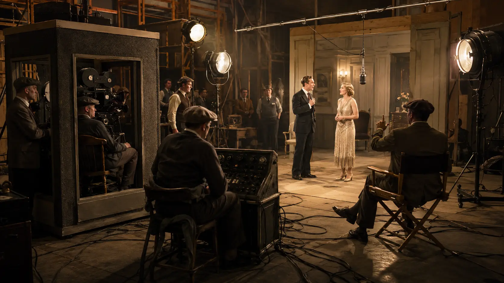
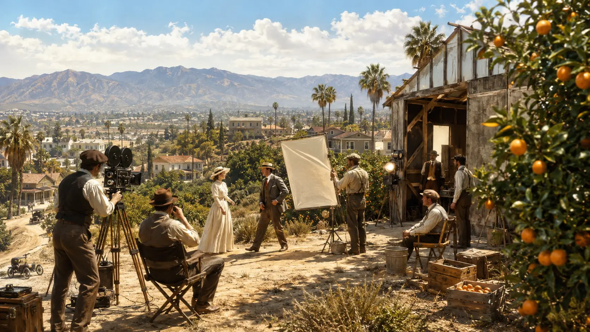
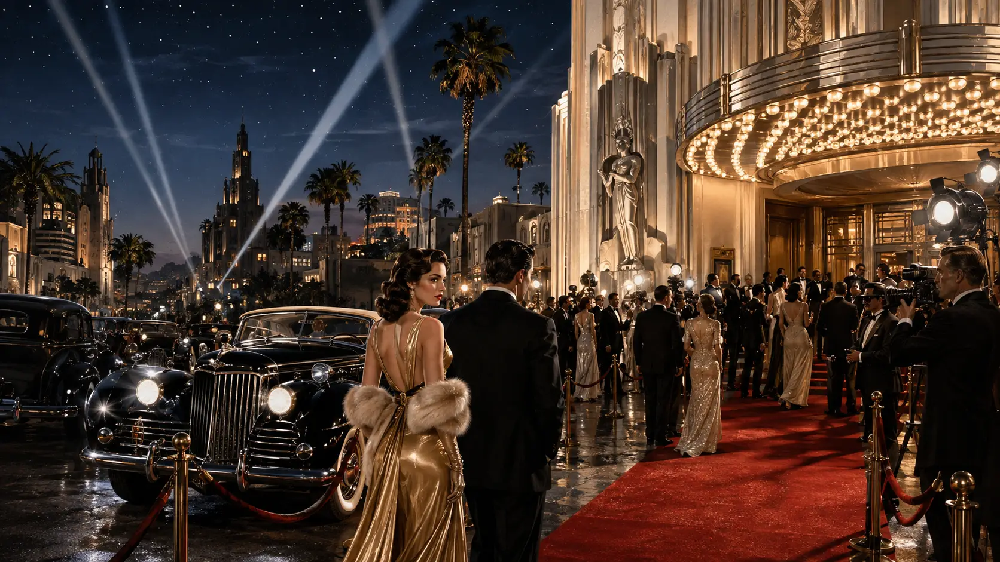
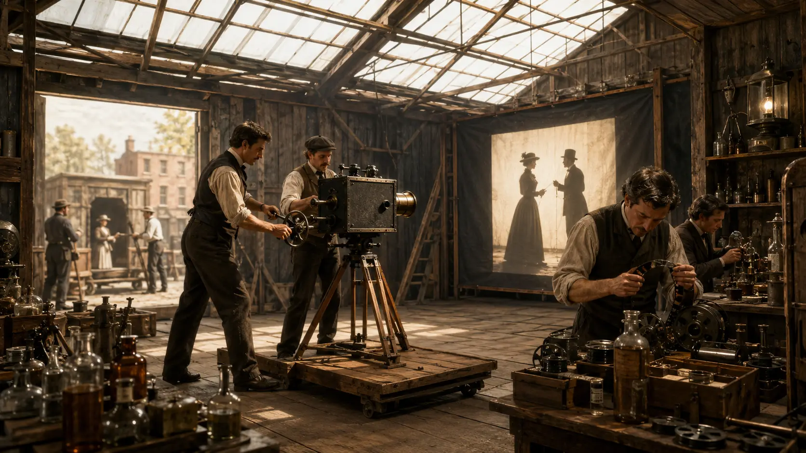
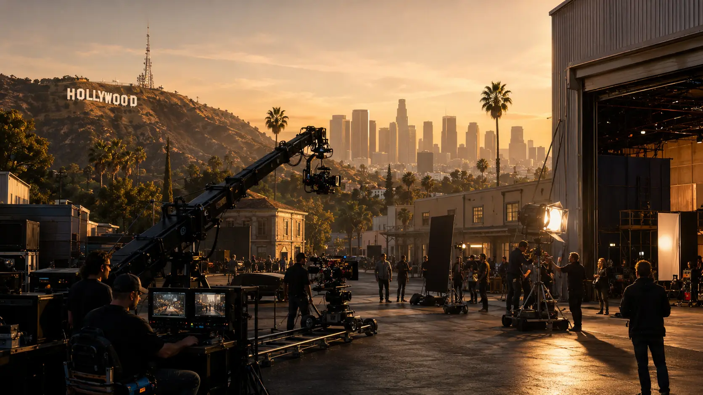

1. Before Hollywood: When American Movies Were Made in the East
Today, the word Hollywood is almost interchangeable with the American movie industry. Studios, movie stars, premieres, red carpets and billion-dollar blockbusters all seem naturally connected to Southern California. But the American film business did not begin anywhere near Hollywood.
Its earliest major center was on the opposite side of the country.
During the final years of the nineteenth century, much of the technology that helped create the American motion-picture industry was being developed in New York and New Jersey. Thomas Edison and his employees experimented with devices for recording and displaying moving images at his laboratory complex in West Orange, New Jersey. In 1893, the complex became home to the Black Maria, a strange tar-paper-covered building widely regarded as the first purpose-built motion-picture studio in the world. The structure could rotate on a circular track and had an opening roof, allowing filmmakers to follow the sun and obtain enough natural light for filming.
The movies created there would look almost unrecognizable to modern audiences. They were extremely short, often lasting only seconds, and frequently showed performers, dancers, athletes or simple everyday actions rather than elaborate stories. One famous example, filmed in 1894, showed Edison employee Fred Ott sneezing in front of the camera. Yet experiments like these represented something extraordinary: moving images were beginning to transform from a technological curiosity into a new form of entertainment.
Edison was far from the only figure involved. Inventors, engineers, businessmen and entertainers were competing to develop cameras, projectors and new ways of showing films to paying audiences. Companies such as the American Mutoscope and Biograph Company, Edison Manufacturing Company and Vitagraph became important names during the industry's early years. Many operated from New York City, New Jersey and the Hudson River region rather than California. The Library of Congress describes Fort Lee, New Jersey, as one of the major centers of American film production during the early 1910s, at a time when Hollywood had not yet established its dominance.
New York was particularly important because it already possessed many of the ingredients a young entertainment industry needed. It had enormous populations, established theaters, vaudeville performers, newspapers, financial institutions and large audiences willing to pay for new forms of amusement. Moving pictures initially appeared alongside other attractions in theaters and amusement venues before dedicated movie theaters became increasingly common.
One of the most important developments was the rise of the nickelodeon. These small theaters generally offered inexpensive film programs to mass audiences, helping turn motion pictures from a novelty into a regular entertainment business. By 1908, thousands of nickelodeons were operating across the United States, creating an enormous demand for new films.
That demand changed everything.
Filmmakers could no longer rely on a handful of simple recordings. Audiences wanted more stories, more actors, more locations and a constant supply of new material. Production companies began making films at a faster pace, while directors and cameramen experimented with editing, camera placement and narrative techniques that gradually transformed short moving images into recognizable cinematic storytelling.
The East Coast therefore became an early laboratory for what the movie industry would eventually become. New York studios produced films, New Jersey offered locations and production facilities, and companies competed fiercely for technology, talent and audiences. Long before Los Angeles became filled with studio backlots, filmmakers were already building an industry thousands of kilometers away.
There was also another factor shaping this young business: patents.
Motion-picture technology was valuable, and companies frequently fought over who controlled the cameras, projectors and other equipment necessary to produce and exhibit films. Edison became deeply involved in patent disputes with competitors, and in 1908 several major companies joined together to create the Motion Picture Patents Company, an organization designed in part to control access to key film technologies and licenses. Legal battles surrounding these patents became one of the defining features of the early American movie business.
But while the East Coast had helped create the American film industry, it also had limitations.
Winter weather could interrupt outdoor shooting. Natural light was less predictable. Crowded cities made large productions difficult. Filmmakers increasingly wanted open landscapes, varied scenery and places where they could shoot throughout more of the year. At the same time, the industry was expanding so quickly that producers were constantly searching for cheaper and more flexible ways to make films.
Thousands of kilometers to the west, California offered almost everything they were looking for.
And within California was a quiet community outside Los Angeles whose name would eventually become one of the most famous words in entertainment.
Hollywood.
2. Why Filmmakers Began Moving to California
At the beginning of the twentieth century, California was not yet the center of American filmmaking. For producers working in New York, New Jersey and Chicago, it was simply a distant place with one increasingly irresistible advantage:
the camera could keep rolling.
Early motion-picture production depended heavily on sunlight. Electric studio lighting was still limited, expensive and technically difficult, which meant filmmakers needed reliable natural illumination. On the East Coast, winter brought shorter days, clouds, rain and snow that could disrupt production schedules. Southern California offered something radically different: long periods of sunshine, mild winters and weather that allowed outdoor filming during much of the year.
Around 1910, American film companies increasingly began sending production units to the Los Angeles area specifically to take advantage of its sunshine and dry winter climate. The movement accelerated remarkably quickly. According to the Library of Congress, by 1913 almost every major American film company except Edison had established some kind of operation in Southern California.
But sunshine alone does not explain why Los Angeles became Hollywood.
Southern California possessed an extraordinary variety of landscapes within relatively short distances of one another. A production crew could find beaches along the Pacific coast, mountains, deserts, forests, ranches, farmland and rapidly growing urban environments without traveling across the country.
For an industry increasingly interested in fictional stories, this was enormously valuable.
California could imitate many different places on screen. Dry landscapes could become the American frontier or a distant desert. Mountains could represent remote wilderness. Coastal areas could provide tropical or maritime scenery. Ranches and undeveloped land were particularly useful for the enormously popular Western genre.
The National Park Service notes that California's mild climate and varied landscape allowed filmmakers to reproduce a wide range of settings while remaining relatively close to their production facilities.
The region also had something the densely developed East Coast could not offer as easily:
space.
Land surrounding Los Angeles was comparatively inexpensive, allowing film companies to construct larger studios, outdoor sets and eventually enormous backlots. The Library of Congress later described some early California studio properties as resembling small cities, spread across acres of inexpensive land.
That mattered because movies themselves were becoming more ambitious.
Films were growing longer. Productions required larger casts. Directors wanted bigger sets and more varied locations. The emerging industry needed room not only for cameras and actors but for workshops, costumes, scenery construction, administrative offices, storage facilities and eventually entire artificial streets and towns.
Southern California could accommodate that expansion.
There was also another advantage that would become increasingly important: distance.
Thousands of kilometers separated Los Angeles from the industry's traditional power centers in New York and New Jersey. This geographical separation has produced one of the most famous stories about the birth of Hollywood — that filmmakers moved west specifically to escape Thomas Edison and his patent lawyers.
There is some truth behind the story, but the reality is more complicated.
Edison and other major companies had spent years fighting legal battles over motion-picture technology. Cameras, projectors and film equipment were protected by competing patents, and Edison aggressively pursued companies he believed were infringing his intellectual property. In December 1908, Edison and Biograph joined with other companies to form the Motion Picture Patents Company, commonly known as the MPPC or simply “the Trust.”
Through interconnected licensing agreements involving producers, distributors, theaters and suppliers, the organization attempted to exercise enormous control over the American film business. Independent producers who operated outside the system resisted it, found alternative equipment and film supplies, and continued making movies despite legal pressure.
Being far from the Trust's traditional East Coast base could certainly make life easier for some independent filmmakers.
But the popular version of the story sometimes goes much further, portraying early filmmakers as fugitives hiding in California while Edison agents chased them across the country.
That exaggerates what actually happened.
The migration west was already driven by powerful economic and practical reasons: better weather, stronger sunlight, cheap land, varied scenery and the ability to film throughout the winter. Patent conflicts were part of the competitive environment surrounding the industry, especially for independent companies, but they were not the single reason Hollywood emerged.
In fact, companies connected to the established film industry also moved west. The migration was not merely a rebellion against Edison; it was an industry discovering a location that was simply better suited to large-scale movie production.
The transformation began gradually.
In 1909, William Selig and director Francis Boggs established a permanent film-production operation in Los Angeles for the Selig Polyscope Company, one of the earliest important steps toward creating a permanent Southern California film industry. Other companies soon followed.
Then came one of the most famous early expeditions.
During the winter of 1909–1910, director D. W. Griffith traveled west with a group from the New York-based Biograph Company. Griffith and his crew filmed extensively around Los Angeles, taking advantage of landscapes and weather that were difficult to reproduce reliably back east.
Among the films produced during this period was In Old California, shot in 1910 in the community of Hollywood. It is commonly identified as the first film made in Hollywood by a major production company and became an important symbolic moment in the neighborhood's transformation into a filmmaking center. National Park Service historical documentation associates the production directly with Hollywood's emergence as a center of the industry.
At the time, however, nobody could know what was about to happen.
Hollywood was not yet synonymous with movies. Los Angeles already had filmmaking activity in other neighborhoods, and California was only one of several places where motion pictures were being produced.
But once companies experienced what Southern California could offer, the advantages became difficult to ignore.
Studios returned.
Some stayed.
Others built permanent facilities.
Actors, directors, cameramen, technicians, writers and entrepreneurs began following them west. What started as seasonal filmmaking trips gradually became a permanent migration of talent and capital.
By the early 1910s, the shift was accelerating so rapidly that Southern California was no longer merely an alternative filming location. It was becoming the new center of American movie production.
And within that expanding industry, one small community was about to capture the world's imagination.
Its name was Hollywood.
3. Hollywood Before the Movies
Before film studios, movie stars and giant premieres transformed it into a global symbol of entertainment, Hollywood was a quiet agricultural community on the outskirts of Los Angeles.
There were no studio gates, no movie palaces and no famous sign overlooking the hills.
There were farms, orchards, open land and scattered homes.
The area that would eventually become Hollywood began developing during the late nineteenth century, when Southern California was attracting settlers, investors and land developers. One of the figures most closely associated with its early development was Harvey Henderson Wilcox, a real-estate investor who purchased land west of Los Angeles in the 1880s. Together with his wife, Daeida, he helped subdivide and promote the community that would soon carry the name Hollywood.
Even the origin of that name has become part of Hollywood mythology.
Several competing stories exist about exactly how “Hollywood” was chosen. The most commonly repeated version credits Daeida Wilcox, who reportedly encountered the name during a trip and liked the sound of it. What is certain is that by 1887, the name Hollywood appeared on an official subdivision map filed by Harvey Wilcox in Los Angeles County.
At that point, the name had absolutely nothing to do with movies.
In fact, Hollywood's earliest developers imagined something very different.
The community was promoted as a peaceful residential area removed from the noise and congestion of central Los Angeles. Agriculture played an important role in the local economy, with citrus groves, fig trees and other crops spreading across the surrounding landscape. The region's mild climate made it attractive both to farmers and to people arriving from colder parts of the United States.
Hollywood slowly developed the basic features of a small town.
Roads were improved. Businesses appeared. Churches and schools were established. Transportation connections linked the area more closely with Los Angeles. By the beginning of the twentieth century, the population was growing, but Hollywood still felt geographically and culturally separate from the rapidly expanding city nearby.
That independence did not last.
In 1903, Hollywood was incorporated as its own municipality. The new town had only a few thousand residents, and its leaders attempted to control development while preserving its relatively quiet character.
Among the rules introduced during this period were restrictions reflecting the conservative social attitudes of some early residents. Alcohol sales were heavily restricted, and local officials attempted to maintain Hollywood as a respectable residential community.
It is difficult to imagine a greater contrast with the place Hollywood would soon become.
Only a few years later, actors, directors, producers, stunt performers, writers and entertainers would pour into the area. Hotels, restaurants, nightclubs and theaters would follow them. The same community originally promoted for its calm suburban atmosphere would eventually become associated with glamour, celebrity and scandal.
But before that could happen, Hollywood faced another major transformation.
The growing community needed access to reliable public services, particularly water.
Los Angeles was expanding aggressively during this period, and surrounding towns increasingly found advantages in joining the larger city. Hollywood residents ultimately voted to consolidate with Los Angeles, and in 1910 Hollywood officially became part of the City of Los Angeles.
The timing could hardly have been more significant.
That same year, filmmakers were already beginning to discover the area.
Hollywood's annexation placed it inside a rapidly growing city that was investing in roads, transportation, electricity, water infrastructure and urban development. Los Angeles offered the resources of a major metropolitan area while Hollywood itself still contained large amounts of open, relatively inexpensive land.
For movie producers, that combination was extremely attractive.
A studio could operate close enough to Los Angeles to access workers, equipment, transportation and financial services while still having enough space to construct sets and film outdoors. At the same time, the surrounding region offered mountains, beaches, deserts and countryside within practical traveling distance.
Hollywood had not been designed for the movie industry.
It simply happened to be in an unusually favorable position when that industry arrived.
One of the first major companies to establish a permanent presence in Hollywood was the Nestor Film Company. In 1911, Nestor opened a studio at the corner of Sunset Boulevard and Gower Street, converting an existing building into a production facility.
Its arrival is often regarded as the beginning of Hollywood's transformation into a permanent filmmaking district.
Other companies quickly followed.
Within only a few years, studio buildings began replacing portions of the agricultural landscape. Empty lots became filming spaces. Actors walked along streets that had recently served a quiet residential community. Film companies rented buildings, purchased land and constructed increasingly sophisticated production facilities.
The change happened with astonishing speed.
Hollywood had spent decades developing as a small town.
The movie industry would reinvent it in only a fraction of that time.
By the middle of the 1910s, the name Hollywood was already becoming increasingly connected with filmmaking. As more studios arrived and more performers moved west, the neighborhood began acquiring something no planning map or real-estate developer could have created deliberately:
a reputation.
That reputation would prove enormously powerful.
Because Hollywood was about to become more than just a convenient place to make movies.
It was about to become the headquarters of an entirely new industrial system.

4. The First Studios Arrive
Once filmmakers discovered Southern California, the next step was inevitable.
They stopped treating Los Angeles as a temporary filming location and began building permanent bases there.
During the early 1910s, production companies arrived with remarkable speed. Some settled directly in Hollywood, while others established studios in nearby communities such as Edendale, Culver City and Universal City. Together, these facilities created the foundation of what would become the most powerful film-production center in the world.
One of the most important early milestones came in 1911, when the Nestor Film Company established a studio at Sunset Boulevard and Gower Street.
The facility was modest by later Hollywood standards. Early studios often consisted of little more than converted buildings, outdoor stages and simple structures designed to take advantage of California's abundant sunlight. Nevertheless, Nestor's permanent presence helped demonstrate that Hollywood could support continuous film production rather than occasional location shoots.
Other companies quickly recognized the opportunity.
The industry was still young enough that the companies entering California were not yet the enormous corporations audiences would later associate with Hollywood. Many were relatively small businesses competing fiercely for actors, directors, equipment and access to theaters.
But some of them would grow into legendary names.
Among the most important early entrepreneurs was Carl Laemmle, a German-born businessman who had entered the film industry after recognizing the enormous popularity of nickelodeon theaters. Laemmle founded the Independent Moving Pictures Company and became one of the most determined opponents of the Motion Picture Patents Company.
In 1912, his company joined several others to create the Universal Film Manufacturing Company.
Universal soon became one of the most ambitious film businesses in Southern California.
Instead of operating from a small urban lot, Laemmle envisioned something much larger: an enormous property where multiple films could be produced simultaneously. In 1915, Universal City officially opened in the San Fernando Valley.
It was not simply a studio building.
It was effectively an entire filmmaking town.
The property contained sets, offices, workshops, stages and open land where filmmakers could construct different environments. Western streets, villages and other artificial landscapes could be created, destroyed and rebuilt depending on the needs of a production.
This idea would become central to Hollywood.
Rather than traveling enormous distances every time a story required a different setting, studios could simply build worlds themselves.
Another company that would become fundamental to Hollywood's development was Paramount Pictures.
Its origins were more complicated than the creation of a single studio. Several businesses and producers gradually combined during the 1910s, including Adolph Zukor's Famous Players Film Company, Jesse L. Lasky's Feature Play Company and the Paramount distribution organization.
Zukor was particularly important because he believed audiences would pay to watch longer, more prestigious films featuring famous performers.
At a time when many American movies were still relatively short, that was an ambitious strategy.
The philosophy was summarized in a famous idea associated with Famous Players:
famous players in famous plays.
Instead of treating actors as anonymous performers, companies increasingly realized that recognizable personalities could attract audiences. This would eventually help create one of Hollywood's most powerful inventions: the movie star.
Meanwhile, Jesse L. Lasky and Cecil B. DeMille were helping establish another landmark in Hollywood history.
In 1913, Lasky, DeMille and Samuel Goldfish — who would later become known as Samuel Goldwyn — formed the Jesse L. Lasky Feature Play Company. DeMille traveled to California to direct the company's first feature.
The result was The Squaw Man, released in 1914.
The production was filmed partly in and around Hollywood, and its success helped confirm that serious feature-length movies could be produced successfully in Southern California.
The barn associated with the production survived and eventually became part of the Hollywood Heritage Museum, a physical reminder of just how primitive the industry's early facilities could be.
The studios did not remain primitive for long.
As audiences grew, money began pouring into the business.
Film companies purchased larger parcels of land. Outdoor stages became permanent studio complexes. Workshops were needed to build sets. Costume departments expanded. Laboratories processed film. Writers prepared scripts. Editors assembled footage. Carpenters, painters, electricians, camera operators and countless other specialists became part of an increasingly organized production process.
Movie production was transforming from experimental entertainment into an industrial operation.
And Southern California allowed that operation to expand on a scale that had been difficult on the crowded East Coast.
One of the most important developments was the creation of the studio backlot.
Studios began constructing permanent or semi-permanent streets, buildings and landscapes that could be reused across many different productions. A Western town might appear in dozens of films. A European-looking street could become Paris in one movie and another city in the next.
Nothing had to be completely real.
It only had to look convincing through the camera.
This ability to manufacture entire environments helped Hollywood develop a production efficiency unlike anything the young industry had previously known.
The growing concentration of studios also produced another enormous advantage: talent began concentrating in the same place.
Actors arrived looking for work.
Directors followed the studios.
Writers came west to create stories.
Technicians learned specialized filmmaking skills.
Costume designers, set builders, stunt performers and cinematographers could move from one production to another without leaving Southern California.
Once enough film companies had established themselves in the region, a powerful cycle began.
Studios moved to California because talent and infrastructure were available there.
Talent moved to California because the studios were there.
More suppliers and specialized workers followed because both were there.
Hollywood was developing what economists would now describe as an industrial cluster: a geographic concentration of companies, workers and supporting businesses that made the entire system increasingly difficult for competitors elsewhere to reproduce.
Not every major studio was physically located inside Hollywood itself.
This distinction would become increasingly important.
Culver City became home to major facilities, including those eventually associated with MGM. Universal developed Universal City. Warner Bros. would establish major operations in Burbank. Other studios spread across different parts of Los Angeles County.
Yet the public gradually began using one name to represent all of them.
Hollywood.
The word stopped referring merely to a neighborhood.
It began referring to an industry.
And as studios became larger, richer and more organized, the companies controlling them discovered that producing movies was only part of the business.
The real power would come from controlling how films were made, how they were distributed and where audiences were allowed to see them.
That discovery would give birth to the Hollywood studio system.
5. Why Southern California Was Perfect for Filmmaking
Hollywood's rise was not the result of one lucky decision.
Southern California offered filmmakers a combination of advantages that was extremely difficult for any other region in the United States to match.
The most obvious was weather.
Early film production depended heavily on sunlight, especially before powerful artificial studio lighting became common. Southern California's long periods of clear skies and relatively mild winters allowed studios to shoot more consistently throughout the year.
That reliability had enormous economic value.
Every day lost to bad weather meant actors, crews, equipment and sets were sitting idle. In an industry already producing films at increasing speed, predictable shooting conditions helped studios keep costs under control and maintain tighter schedules.
But climate was only the beginning.
Southern California also offered an extraordinary range of natural environments within a relatively compact region. Filmmakers could reach beaches, mountains, valleys, dry landscapes, ranch country and urban areas without moving an entire production across the country.
This gave studios remarkable flexibility.
A single film company could shoot a Western in a dry valley, a seaside drama along the Pacific coast and a mountain adventure only days apart.
The landscape became one of Hollywood's greatest hidden assets.
Filmmakers were not limited to using California as California. They could make it stand in for almost anywhere.
A desert could become the Middle East.
A rugged valley could represent the American frontier.
A coastal location could become a foreign port.
A carefully chosen street could stand in for another city entirely.
As production design became more sophisticated, studios learned to combine real locations with constructed sets, creating worlds that audiences accepted as convincing even when they were assembled only a few kilometers apart.
This ability dramatically reduced the need for expensive long-distance travel.
It also encouraged filmmakers to think on a larger scale.
Movies could now include more elaborate outdoor scenes, larger casts and more ambitious settings without requiring the logistical complexity of sending hundreds of people across the United States.
Southern California also had abundant land.
During the industry's early expansion, many areas around Los Angeles were still sparsely developed compared with major eastern cities. Studios could purchase or lease relatively large properties and build production facilities that would have been difficult or expensive to create in places such as Manhattan.
This land made the rise of the backlot possible.
Studios could construct artificial streets, villages, mansions, ranches and entire neighborhoods. Some sets remained standing for years and appeared repeatedly in different productions.
A single building could become a bank in one film, a hotel in another and a government office in a third.
A Western street could be redressed dozens of times.
Efficiency became part of the visual illusion.
Hollywood was learning that filmmaking was not only an art form.
It was also a manufacturing process.
Los Angeles itself supplied another major advantage: a rapidly growing workforce.
The city was expanding at extraordinary speed during the early twentieth century. New residents arrived from across the United States and abroad, creating a large pool of potential workers.
Studios needed far more than actors and directors.
They required carpenters to build sets, painters to create backgrounds, electricians, costume makers, makeup artists, camera operators, laboratory technicians, animal handlers, drivers, accountants and administrative staff.
As more studios opened, these specialized professions became increasingly concentrated in Southern California.
That concentration made the region even more attractive.
If a studio needed a skilled cinematographer, set designer or stunt performer, there was a growing chance that someone with the required experience was already nearby.
Los Angeles also had expanding transportation connections.
Railways linked Southern California with the rest of the United States, making it possible to move equipment, film stock, costumes and people over long distances. Roads improved rapidly as automobile ownership increased, helping production crews travel to locations across the region.
The nearby port also connected Los Angeles with international trade.
This infrastructure mattered because filmmaking was becoming increasingly complex. Studios needed a constant flow of raw materials, machinery and specialized equipment.
Another advantage was the region's architecture and cultural variety.
Southern California was growing so rapidly that builders experimented with many different architectural styles. Spanish Colonial Revival buildings, Mediterranean-inspired villas, modern commercial districts and older ranch structures all provided filmmakers with useful visual environments.
Even when natural locations were insufficient, studios could build whatever they needed.
California's proximity to the Mexican border also contributed to the region's geographic flexibility, although the importance of this factor is sometimes overstated in popular accounts of early Hollywood. What mattered more broadly was that Southern California placed filmmakers close to a wide variety of landscapes and communities while still keeping them near major production facilities.
The result was a unique balance between city and open space.
Hollywood and Los Angeles provided urban infrastructure, workers, financing and transportation.
The surrounding region provided the landscapes.
Studios could have both.
That combination became more valuable as films grew longer and audiences expected increasingly spectacular stories.
By the 1910s and 1920s, Hollywood productions were no longer simply recording actors in front of a painted background. Directors were staging battles, constructing enormous historical sets, filming large crowds and attempting visual effects that would have seemed impossible only a decade earlier.
Southern California gave them room to experiment.
And as the studios grew richer, they began modifying the environment itself.
Entire sets could be constructed specifically for one production.
Artificial lakes could be created.
Large outdoor stages could host thousands of extras.
Backlots became miniature worlds controlled entirely by the studios.
Perhaps the greatest advantage, however, was that all these factors reinforced one another.
Good weather attracted filmmakers.
Filmmakers attracted studios.
Studios attracted workers.
Workers attracted suppliers and specialized businesses.
The growing infrastructure attracted even more productions.
By the time competing regions understood how powerful this concentration had become, Southern California was already far ahead.
This is one of the most important reasons Hollywood maintained its dominance.
A rival city did not simply need cameras and actors to compete.
It needed the entire ecosystem.
And by the early 1920s, Hollywood had built one.
Now the studios were ready to organize that ecosystem into one of the most powerful systems the entertainment industry had ever seen.
6. The Birth of the Hollywood Studio System
By the beginning of the 1920s, Hollywood had solved one of the fundamental problems of the young movie business: how to produce films continuously and on a large scale.
The next challenge was even more important.
How could companies turn that production into a predictable, highly profitable industry?
The answer was the Hollywood studio system.
Rather than treating each movie as an independent artistic project assembled from scratch, the major companies increasingly organized filmmaking like a sophisticated manufacturing operation. Studios maintained permanent facilities, employed large numbers of workers, signed performers and directors to long-term contracts and developed systems capable of producing dozens of films every year.
Movies were becoming art made by an industry.
At the center of this transformation was a simple economic idea: a studio could reduce uncertainty if it controlled as many stages of the business as possible.
Producing a movie was only the beginning.
Once the film existed, somebody had to distribute copies across the country. Then theaters had to agree to show it. Audiences had to be convinced to buy tickets. Every stage represented another company, negotiation and potential source of risk.
The most powerful Hollywood companies gradually began bringing these pieces together.
This structure became known as vertical integration.
A vertically integrated studio could participate in three crucial parts of the movie business:
production, where films were created;
distribution, where they were marketed and supplied to theaters;
and exhibition, where audiences actually watched them.
By controlling several or all of these stages, a company could dramatically increase its power.
A studio that owned or controlled important theaters did not have to wonder whether its biggest films would find screens. Its distribution organization could ensure that a constant stream of studio productions reached cinemas around the country. Revenue from theaters could then help finance new films.
The different parts of the business supported one another.
During the 1920s, this increasingly integrated structure transformed the American film industry and became one of the defining features of the classical Hollywood studio system.
Inside the studios, filmmaking itself also became more organized.
A major studio operated almost like an enormous self-contained city.
There were soundstages, outdoor sets, editing rooms, film laboratories, costume departments, prop warehouses, construction workshops and administrative offices. Thousands of objects were stored so they could be reused whenever another production required them.
The workforce was equally specialized.
Writers developed scripts.
Directors supervised filming.
Cinematographers controlled the photography.
Carpenters and painters built sets.
Costume designers dressed performers.
Editors assembled the finished footage.
Publicists created stories that newspapers and magazines could use to promote films and stars.
Rather than hiring an entirely new team every time a movie began, studios increasingly kept large numbers of these professionals under contract.
That allowed them to move talent from one project to another.
An actor might finish one film and begin another almost immediately. A director could complete a production and receive a new assignment from the same studio. Sets, costumes and props could be modified and reused.
Hollywood was learning how to produce imagination efficiently.
This did not mean every film was identical.
Studios still made comedies, romances, Westerns, crime stories, historical dramas and increasingly ambitious spectacles. But the infrastructure behind those movies became standardized enough that companies could maintain a constant flow of new releases.
That flow was essential because movie theaters needed something Hollywood had learned to provide extremely well:
new content, week after week.
Cinema attendance was becoming a regular part of American life. Audiences did not visit theaters only for occasional spectacular events. Many people went frequently, meaning exhibitors required a steady supply of films.
The studios responded with production schedules containing everything from prestigious major releases to inexpensive movies designed simply to keep theaters supplied.
This created what was effectively a Hollywood production pipeline.
While one movie was being filmed, another could be edited, another prepared for distribution and several more could already be in development.
The system reduced downtime and allowed studios to spread the enormous cost of their facilities across many productions.
It also transformed movie financing.
Instead of betting the entire future of a company on one film, large studios could manage portfolios of movies. A major success could compensate for several disappointments. Reliable stars and popular genres could reduce risk further.
But the studios found an even more powerful way to protect themselves.
They began selling films to theaters in packages.
One of the most controversial practices associated with the studio era became known as block booking.
Rather than allowing an independent theater owner to select only the films they believed would attract audiences, distributors could require theaters to take groups of movies together. Access to an especially desirable production might therefore be tied to the acceptance of several less prestigious films.
In some circumstances, theater owners were even expected to commit to films before they had been completed or sometimes before detailed information about them was available, a practice commonly associated with blind bidding or blind selling.
For the studios, the advantage was enormous.
A blockbuster did not merely sell itself.
It could help sell the rest of the studio's production slate.
Block booking would eventually become one of the practices challenged by independent exhibitors and the United States government, contributing decades later to the landmark antitrust case United States v. Paramount Pictures.
Yet another crucial element of the studio system was the growing power of the contract.
Actors were becoming famous enough that audiences followed particular performers from movie to movie. Studios recognized the value of keeping those stars connected to their own productions.
Long-term contracts gave companies significant control over performers' careers.
A studio could determine which films an actor appeared in, pair them with particular directors, shape their screen image and coordinate publicity designed to make them more attractive to audiences.
The same principle applied to many directors, writers and other creative workers.
This created stability for the studios but could severely restrict the freedom of the people working within the system.
If an actor disliked a role, refusing it could create a serious conflict with the studio holding their contract. Suspensions and contract disputes became recurring features of Hollywood life.
The system could make someone famous.
It could also decide what kind of famous person they were allowed to become.
Not everyone accepted this concentration of power.
In 1919, four of the most celebrated figures in American movies — Charlie Chaplin, Mary Pickford, Douglas Fairbanks and D. W. Griffith — created United Artists.
Their goal was revolutionary for the time.
Instead of allowing established companies to control the distribution of their films, these major creative figures wanted greater authority over their own work and careers.
United Artists did not initially operate like the increasingly integrated studios around it. Its importance came from demonstrating that some of Hollywood's most valuable talent understood just how much power distribution companies could exercise over filmmakers.
The conflict between creative independence and corporate control would become a recurring theme throughout Hollywood history.
Meanwhile, the major companies continued expanding.
During the 1920s, mergers, acquisitions and financial deals created increasingly powerful corporations. Wall Street investment entered the film business. Movie theaters became larger and more luxurious. National theater chains expanded, giving certain companies access to enormous audiences.
Theaters themselves became symbols of cinema's new status.
The modest nickelodeons of the previous generation gave way to lavish movie palaces containing thousands of seats, elaborate decoration, orchestras and enormous screens. Going to the movies was no longer simply about watching a short novelty.
It had become an experience.
And whoever controlled those theaters possessed extraordinary influence over which films audiences could see.
By the end of the 1920s, Hollywood had therefore evolved far beyond a collection of filmmakers working under the California sun.
It had become an interconnected industrial machine.
Studios controlled enormous production facilities.
They employed armies of specialized workers.
They developed stars.
They distributed movies nationally and internationally.
Some controlled major theater chains.
And through practices such as block booking, they could use their most desirable films to strengthen the commercial position of everything else they produced.
The result was extraordinarily efficient — and extraordinarily powerful.
The system helped Hollywood produce movies at a scale unmatched almost anywhere else in the world.
But it also concentrated enormous influence in the hands of a relatively small group of corporations.
During the following decades, those companies would become known collectively as Hollywood's major studios.
And for a remarkable period of American history, they would control almost every step between the moment a screenplay was written and the moment an audience sat down in a theater.
Hollywood had built the machine.
Now the major studios were about to take control of it.

7. How the Major Studios Took Control
By the 1930s, Hollywood was no longer an open field filled with dozens of companies competing on roughly equal terms.
Power had concentrated.
A relatively small group of corporations now controlled the most important parts of the American movie business, determining which films were produced, which stars appeared in them, how they reached theaters and, in many cases, where audiences could watch them.
At the center of this system were five companies that became known as the Big Five:
Paramount Pictures, Metro-Goldwyn-Mayer, Warner Bros., 20th Century-Fox and RKO Radio Pictures.
They were joined by three other important companies — Universal Pictures, Columbia Pictures and United Artists — commonly called the Little Three.
Together, these eight companies dominated classical Hollywood. The crucial difference was that the Big Five were vertically integrated: they were involved not only in producing and distributing movies but also in controlling major theater circuits. The Little Three remained powerful producers or distributors but lacked comparable theater empires.
The Big Five therefore possessed an enormous advantage.
They did not simply make movies.
They controlled much of the road those movies traveled before reaching the audience.
Paramount: Building an Entertainment Empire
Paramount became one of the clearest examples of the vertically integrated studio.
Its history grew from the businesses associated with producers such as Adolph Zukor and Jesse L. Lasky, combined with the Paramount distribution organization. Zukor understood early that feature-length films and recognizable stars could attract large audiences, but he also understood something even more important:
Producing desirable movies gave a company leverage over theaters.
Through expansion and corporate restructuring, Paramount developed extensive production and distribution operations and became connected to one of America's largest theater networks through what became Paramount-Publix.
For Paramount, theaters were not simply places operated by unrelated businesses at the end of the process.
They were part of the empire.
The company could produce a film in Hollywood, distribute it through its own network and secure valuable screens for its releases.
This level of control made it extremely difficult for smaller competitors to challenge the major studios on equal terms.
MGM: Hollywood's Factory of Stars
If one studio came to represent the luxury and prestige of classical Hollywood, it was Metro-Goldwyn-Mayer, better known as MGM.
The company was created in 1924 through the consolidation of Metro Pictures, Goldwyn Pictures and Louis B. Mayer's production company. Behind the merger was theater magnate Marcus Loew, whose Loew's Incorporated needed a dependable supply of films for its cinema circuit.
That relationship was fundamental.
Loew's theaters provided exhibition.
MGM provided movies.
Under Louis B. Mayer and production executive Irving Thalberg, MGM became famous for polished productions and an extraordinary roster of performers.
Its publicity slogan eventually claimed that MGM possessed:
“More stars than there are in heaven.”
The exaggeration captured something real about the company's strategy.
MGM did not merely hire actors.
It manufactured stars.
Performers were placed under contracts, assigned roles, photographed by studio publicity departments and carefully presented to audiences. Their clothing, hairstyles, interviews and public appearances could all contribute to a carefully constructed image.
Names such as Greta Garbo, Joan Crawford, Clark Gable, Judy Garland and Spencer Tracy became associated with MGM during different periods.
The studio itself became part of the attraction.
Audiences could recognize the roaring lion at the beginning of an MGM film and develop expectations about the type of production that followed.
Hollywood was creating something resembling modern brand identity.
Warner Bros.: Risk, Sound and a Different Kind of Hollywood
Warner Bros. followed a different path.
Founded by brothers Harry, Albert, Sam and Jack Warner, the company initially lacked the enormous resources of some competitors.
That made innovation particularly valuable.
In the 1920s, Warner Bros. invested heavily in synchronized-sound technology through the Vitaphone system. The gamble produced one of the most famous turning points in cinema history when The Jazz Singer appeared in 1927.
The film was not the first motion picture ever to contain synchronized sound, and much of it was still presented like a silent film, but its successful use of synchronized singing and spoken dialogue helped convince the industry that sound was commercially viable.
The consequences were enormous.
Within only a few years, silent filmmaking would be displaced by the new era of the talkies.
Warner Bros. had taken a major technological risk and emerged as one of Hollywood's strongest studios.
During the 1930s, it also developed a recognizable identity through tough urban dramas, gangster films and socially conscious stories. Performers such as James Cagney, Edward G. Robinson, Bette Davis and Humphrey Bogart became associated with the studio's harder-edged style.
Different studios were beginning to develop different personalities.
Fox and the Creation of 20th Century-Fox
The company eventually known as 20th Century-Fox emerged from another major consolidation.
William Fox, one of the industry's pioneering businessmen, had created the Fox Film Corporation and built a significant production and theater business. After financial difficulties weakened his position, Fox Film eventually merged in 1935 with Twentieth Century Pictures, a successful production company associated with figures including Joseph Schenck and Darryl F. Zanuck.
The resulting company became 20th Century-Fox.
Like the other major vertically integrated studios, Fox combined production and distribution with access to a substantial theater circuit.
The studio would become particularly famous for polished mainstream entertainment and major stars, and during the following decades figures such as Shirley Temple, Tyrone Power and Betty Grable would help define its public image.
Once again, the star and the studio reinforced each other.
A popular performer could sell a movie.
A powerful studio could turn a performer into a national celebrity.
RKO: A Major Studio Born From Sound
The fifth member of the Big Five was also one of the most unusual.
RKO Radio Pictures was created in the late 1920s during the transformation brought by synchronized sound.
Its origins involved several businesses, including the Radio Corporation of America, the Keith-Albee-Orpheum theater organization and the Film Booking Offices of America.
The objective was partly technological and commercial: RCA wanted a strong outlet for its sound-film technology.
The resulting company became Radio-Keith-Orpheum — RKO.
Although RKO would experience repeated financial problems and never achieve the same long-term stability as some of its competitors, it produced films that became central to Hollywood history.
Its output eventually included King Kong in 1933 and Citizen Kane in 1941, as well as the celebrated Fred Astaire and Ginger Rogers musicals.
RKO demonstrated another characteristic of the studio era:
Corporate stability and artistic importance did not necessarily go together.
A struggling studio could still produce masterpieces.
The Little Three
Below the Big Five in industrial power — though certainly not always in artistic importance — stood Universal, Columbia and United Artists.
They became known collectively as the Little Three.
Their main disadvantage was straightforward:
They did not possess theater chains comparable to those controlled by the Big Five. This meant they generally lacked the same degree of vertical integration and depended more heavily on convincing independently controlled theaters or theaters owned by competitors to show their films.
Nevertheless, each developed a strategy for surviving alongside the giants.
Universal Pictures, created by Carl Laemmle, possessed significant production facilities and eventually became particularly associated with horror movies during the early sound era.
Films such as Dracula, Frankenstein, The Mummy and The Invisible Man helped create an enduring cinematic universe of monsters decades before the term “cinematic universe” became part of modern entertainment marketing.
Columbia Pictures started from a far weaker position.
For years, it was regarded as one of Hollywood's less prestigious companies. It lacked the massive resources and theater network of studios such as MGM or Paramount.
But Columbia learned to compete intelligently.
Under studio chief Harry Cohn, it relied heavily on efficient production and relationships with creative talent. Director Frank Capra became especially important to its rise, with successful films such as It Happened One Night, Mr. Deeds Goes to Town and Mr. Smith Goes to Washington helping elevate the studio's reputation.
Then there was United Artists.
Created by Charlie Chaplin, Mary Pickford, Douglas Fairbanks and D. W. Griffith in 1919, United Artists remained fundamentally different from the factory-style studios.
Instead of maintaining an enormous permanent production operation, it primarily provided distribution for films made by independent producers and prominent filmmakers.
In an industry moving toward centralized corporate control, United Artists offered an alternative model based on greater creative independence.
Each Studio Became Its Own World
One of the remarkable characteristics of classical Hollywood was that the studios gradually developed recognizable identities.
MGM became associated with prestige, glamour and stars.
Warner Bros. became known for energetic urban stories, gangster pictures and socially conscious dramas.
Universal developed a powerful reputation for horror.
Paramount cultivated sophisticated entertainment and major personalities.
Fox built its own combination of stars and popular spectacle.
These differences were partly creative.
But they were also industrial.
Studios had permanent writers, directors, designers and performers working within their organizations. Over time, those combinations of people helped produce recognizable approaches to filmmaking.
An MGM movie could actually feel different from a Warner Bros. movie.
The studio logo appearing at the beginning of a film therefore became more than a corporate mark.
It became a promise.
The Theater Was the Real Source of Power
The greatest advantage of the Big Five, however, remained their involvement in exhibition.
Their theater holdings represented only a portion of all American cinemas, but they included an extraordinarily valuable concentration of prestigious first-run theaters, particularly in major cities.
These were the theaters where important new films could premiere first and where ticket prices and revenues were often strongest.
By the time the federal government pursued its major antitrust case against the industry, the five vertically integrated defendants — Paramount, Loew's/MGM, Warner Bros., RKO and Fox — controlled more than 70 percent of the largest and most desirable first-run theaters in the 92 largest American cities, according to findings later cited in the Paramount litigation.
That gave them extraordinary bargaining power.
Independent producers might successfully make a movie.
But making a movie did not guarantee access to the best screens.
Independent theater owners faced a similar problem from the opposite direction. To obtain the most desirable releases, they frequently had to negotiate with distributors powerful enough to dictate substantial portions of the terms.
Hollywood's major studios had positioned themselves between filmmakers and audiences.
And that was where the real power existed.
Hollywood Becomes an Oligopoly
By the 1930s, the American film business effectively operated as an oligopoly — an industry dominated by a small number of powerful corporations.
Competition still existed.
The studios competed aggressively against one another for stars, stories and audiences.
Independent producers continued making films.
Smaller theaters continued operating.
But the major studios possessed advantages that newcomers could rarely reproduce: enormous production facilities, established distribution networks, recognizable stars, large film libraries, experienced workforces, financing and, in the case of the Big Five, valuable theater chains.
The barriers to entering the industry had become enormous.
Hollywood's dominance was therefore no longer based only on California's sunshine or landscapes.
Those advantages had helped the industry move west.
Now Hollywood's power came from scale.
It had the studios.
It had the workers.
It had the stars.
It had the distribution networks.
It had many of the best theaters.
And increasingly, it had something even more valuable:
the attention of the public.
Millions of people were no longer simply going to see movies.
They were going to see specific actors.
Audiences followed their romances, copied their clothing, read about their private lives and recognized their faces from photographs appearing around the world.
The studios had discovered that a human being could become one of the most valuable assets in the entire movie business.
Hollywood had built its factories.
Now it was about to manufacture movie stars.
8. The Rise of the Movie Star
In the earliest years of cinema, actors were not always the main attraction.
The moving image itself was.
Audiences were fascinated by the novelty of seeing people and places brought to life on a screen, and many early film performers were not even identified by name. Studios often preferred it that way. If actors remained anonymous, they had less bargaining power and were easier to replace.
That arrangement did not last.
As movies became longer and storytelling became more sophisticated, audiences began recognizing familiar faces from one film to another. They wanted to know who those performers were.
The movie industry had discovered one of the most powerful forces in modern entertainment:
celebrity.
At first, studios sometimes referred to popular performers indirectly. One of the most famous examples was Florence Lawrence, who became known to audiences as “The Biograph Girl” because she appeared repeatedly in films produced by the Biograph Company.
Her real name was not prominently advertised.
But audiences recognized her.
In 1910, producer Carl Laemmle helped turn that recognition into publicity gold. After Lawrence left Biograph to work for Laemmle's Independent Moving Pictures Company, a sensational promotional campaign circulated a false rumor that she had been killed in a streetcar accident.
Laemmle publicly denounced the story as a lie and announced that Florence Lawrence was alive and working for his company.
The stunt attracted enormous attention.
More importantly, it promoted Lawrence by name.
The idea that actors themselves could sell movies was becoming impossible to ignore.
Soon studios were publicizing performers aggressively.
Names appeared in advertisements.
Photographs appeared in newspapers and magazines.
Fans began writing letters.
Moviegoers started choosing films because particular actors appeared in them.
The star system was born.
From Performers to Brands
A successful movie star became far more valuable than an ordinary actor.
They were not simply people who performed roles.
They became brands.
Audiences developed expectations about them.
A comedian might become known for a particular style of humor.
A leading man could represent romance and adventure.
An actress might be marketed as sophisticated, innocent, rebellious or glamorous.
Studios carefully reinforced those identities from film to film.
Perhaps no early performer demonstrated the global possibilities of stardom more clearly than Charlie Chaplin.
Chaplin developed his famous Tramp character during the 1910s: bowler hat, toothbrush mustache, oversized trousers, tight coat and distinctive cane.
The appearance was instantly recognizable.
Because silent cinema relied heavily on visual storytelling rather than spoken dialogue, Chaplin's comedy could travel extraordinarily well across language barriers.
Within only a few years, he became one of the most famous people in the world.
Chaplin also demonstrated the financial power stars could acquire.
As his popularity grew, studios competed for his services with increasingly extraordinary contracts. By the late 1910s, he possessed enough power to demand extensive creative control and eventually joined Mary Pickford, Douglas Fairbanks and D. W. Griffith in creating United Artists.
The anonymous film actor had transformed into a celebrity capable of challenging the companies themselves.
Mary Pickford: America's Sweetheart
Another figure central to the development of movie stardom was Mary Pickford.
Born Gladys Smith in Canada, Pickford became one of silent cinema's most beloved performers and was promoted as “America's Sweetheart.”
Her screen image often emphasized youthfulness, innocence and emotional sincerity, even as she became one of the most sophisticated business figures in Hollywood.
Pickford understood the value of her fame remarkably well.
She negotiated increasingly lucrative contracts and gained significant control over the films in which she appeared. When she helped create United Artists in 1919, she was not merely an actress searching for better roles.
She was an entrepreneur attempting to control the economic value of her own celebrity.
That distinction would become increasingly important.
Hollywood stars were valuable because audiences formed emotional relationships with them.
People felt that they knew them.
Studios learned how to convert that feeling into ticket sales.
Douglas Fairbanks and the Heroic Screen Persona
Douglas Fairbanks represented another version of the emerging star system.
Energetic, athletic and charismatic, Fairbanks became famous for adventure films filled with physical action and optimism.
Movies such as The Mark of Zorro, The Three Musketeers and The Thief of Bagdad transformed him into the embodiment of the heroic swashbuckler.
His public image extended beyond the screen.
Fairbanks was promoted as athletic, confident and distinctly American. His marriage to Mary Pickford in 1920 created what was effectively one of Hollywood's first celebrity power couples.
Their home, Pickfair, became legendary.
When Pickford and Fairbanks traveled internationally, enormous crowds sometimes gathered to see them.
Hollywood celebrity was no longer merely an American phenomenon.
The movie star was becoming global.
Rudolph Valentino and the Power of Desire
The emergence of Rudolph Valentino revealed another dimension of film stardom.
Born in Italy, Valentino became one of the great romantic idols of the 1920s through films such as The Four Horsemen of the Apocalypse, The Sheik and Blood and Sand.
His appeal was built around an exoticized image of passion and sexuality that contrasted with many conventional American male screen personalities of the period.
Fans became intensely invested in him.
When Valentino died suddenly in 1926 at only 31 years old, the public response demonstrated just how powerful celebrity culture had become.
Huge crowds gathered around the funeral proceedings in New York, and newspapers devoted extraordinary attention to his death.
A film actor's death had become an international cultural event.
Only a generation earlier, many movie performers had not even been credited by name.
Studios Learn to Manufacture Fame
Hollywood quickly realized that waiting for stars to emerge naturally was inefficient.
Studios wanted to create them deliberately.
Young performers were signed to contracts and placed inside a system designed to transform them into marketable personalities.
Acting lessons could be arranged.
Voices could be trained.
Hair could be restyled.
Wardrobes could be redesigned.
Names could be changed.
Biographical details could be simplified, polished or sometimes invented entirely.
The goal was not merely to improve an actor's performance.
It was to build a public identity audiences could understand instantly.
Hollywood became extremely good at this.
Publicity departments supplied photographs and stories to newspapers.
Fan magazines published interviews and carefully constructed glimpses into stars' private lives.
Premieres generated photographs.
Romances generated headlines.
Even apparently casual appearances could become part of a coordinated publicity strategy.
A star's life outside the movie theater increasingly helped sell what happened inside it.
Fan Magazines Create a New Industry
The rise of movie stardom created an entire media ecosystem.
Publications devoted specifically to films and performers became extremely popular during the 1910s and 1920s.
Among them were magazines such as Photoplay, which helped define early celebrity journalism.
Readers wanted more than information about new films.
They wanted to know where stars lived.
What they wore.
Whom they were dating.
What they ate.
How they exercised.
What their homes looked like.
Hollywood was discovering that curiosity about famous people could become an entertainment product of its own.
The modern celebrity magazine, entertainment news program and social-media gossip ecosystem all have important roots in this period.
The relationship was mutually beneficial.
Magazines needed stars because stars sold copies.
Studios needed magazines because publicity sold tickets.
Hollywood and celebrity journalism grew together.
The Carefully Controlled Private Life
There was, however, a darker side to the system.
Studios understood that a performer's commercial value could depend on how audiences perceived them.
As a result, companies often attempted to control not only stars' professional careers but also aspects of their personal lives.
Contracts could contain morality clauses.
Publicists intervened when scandals threatened a performer's reputation.
Relationships could be encouraged, hidden or presented strategically.
The official biography distributed to the public did not necessarily match reality.
Hollywood increasingly sold two performances at once:
the character appearing in the film and the celebrity appearing in the press.
For some actors, maintaining that second performance could become exhausting.
Scandal Threatens Hollywood's Image
The rapid growth of celebrity culture also created a problem.
The more fascinated audiences became with stars, the more damaging scandals could become.
Hollywood faced several major controversies during the early 1920s, including the death of actress Virginia Rappe after a party attended by comedian Roscoe “Fatty” Arbuckle.
Arbuckle was charged with serious crimes and eventually acquitted after multiple trials, but the scandal devastated his career and generated sensational newspaper coverage.
Other incidents involving Hollywood figures contributed to growing criticism that the movie industry represented moral excess.
For religious organizations, civic groups and political activists already worried about the influence of films, the scandals seemed to confirm their fears about Hollywood culture.
The industry responded by attempting to regulate itself.
In 1922, major studios created the Motion Picture Producers and Distributors of America, appointing former U.S. Postmaster General Will H. Hays as its president.
The organization was partly intended to improve Hollywood's public reputation and reduce the threat of direct government censorship.
Years later, this effort would evolve into the strict production rules commonly known as the Hays Code.
Hollywood had become so culturally important that the private behavior of actors could now influence how the entire industry was perceived.
Stars Gain Power — and Studios Push Back
The star system created a permanent tension inside Hollywood.
Studios needed celebrities because audiences loved them.
But the more popular a star became, the more negotiating power that person could acquire.
A major performer could demand higher salaries.
Better scripts.
Approval over directors.
A share of profits.
Eventually, perhaps even independence from the studio itself.
The companies therefore attempted to control stars through long-term contracts.
A performer might sign an agreement lasting several years, giving one studio the exclusive right to use their services.
The studio could assign roles and sometimes suspend actors who refused them.
Contracts could also be extended to compensate for suspension periods, creating disputes over how long performers were actually obligated to remain with the company.
For stars with enough leverage, these arrangements provided enormous financial security.
For others, they could feel like a cage.
This conflict would become especially intense during Hollywood's Golden Age.
The Faces of the Studios
As the system matured, individual stars became strongly associated with particular companies.
MGM developed one of Hollywood's most famous collections of talent, including performers such as Greta Garbo, Clark Gable and Joan Crawford.
Warner Bros. cultivated stars suited to its tougher dramas, including James Cagney and Bette Davis.
Paramount became associated with sophisticated personalities such as Marlene Dietrich.
Studios increasingly understood that audiences could develop loyalty not only to genres or companies but to faces.
A star could turn an ordinary film into an event.
Their image could appear on posters thousands of kilometers from Hollywood.
And because silent films initially crossed linguistic borders more easily than spoken films, many early celebrities became recognizable internationally with remarkable speed.
Hollywood was exporting people as much as stories.
Celebrity Changes the Meaning of Hollywood
By the 1920s, the word Hollywood had begun to evoke something far larger than film production.
It suggested wealth.
Beauty.
Success.
Romance.
Scandal.
Reinvention.
People arrived in California from across the United States hoping to be discovered.
Only a tiny percentage would ever become famous, but the possibility itself became part of Hollywood mythology.
The industry sold dreams on the screen while simultaneously creating another dream outside it:
the idea that an ordinary person might arrive in Hollywood and become known everywhere.
That mythology survives to this day.
But it emerged because early filmmakers discovered that audiences did not simply care about fictional characters.
They cared about the people playing them.
The movie star became one of Hollywood's greatest inventions.
And just as the star system was reaching new heights, cinema itself was about to undergo another enormous transformation.
Silent movies had allowed Hollywood stars to conquer audiences across national and linguistic boundaries.
Then, suddenly, audiences heard them speak.
The arrival of sound would destroy some careers, create entirely new stars and force Hollywood to rebuild almost every part of the filmmaking process.
9. The Revolution of Sound
For more than three decades, movies had been silent.
That did not mean theaters were quiet.
Silent films were commonly accompanied by pianists, organs or even full orchestras. Larger productions could include specially prepared musical scores, and some theaters added live sound effects or performers.
But the voices of the actors themselves did not come from the screen.
Hollywood had become enormously successful without synchronized dialogue.
Then, in the late 1920s, everything changed.
Cinema Had Been Trying to Speak for Years
The idea of combining recorded sound with moving pictures was not new.
Inventors had experimented with it almost from the beginning of cinema. Thomas Edison had explored systems combining his motion-picture technology with phonographs, while later companies developed various methods for synchronizing recorded audio with projected film.
The problem was reliability.
A separate sound recording had to remain perfectly synchronized with the images. Even a small difference in speed could cause voices and movements to drift apart.
Sound also needed to be loud enough for an entire theater to hear clearly.
For years, these technical problems prevented synchronized sound from becoming the standard.
Silent cinema continued developing instead.
By the 1920s, it had become an extraordinarily sophisticated visual language.
Directors did not necessarily believe that movies needed dialogue.
Many filmmakers actually feared that sound could damage the artistic qualities cinema had spent decades developing.
But technological improvements were making the transition increasingly difficult to resist.
Warner Bros. Takes the Gamble
One studio proved particularly willing to experiment.
Warner Bros.
At the time, Warner Bros. was growing rapidly but still lacked the financial strength of some of Hollywood's largest companies.
The studio partnered with Western Electric and Bell Laboratories technology to develop a system known as Vitaphone.
Vitaphone recorded sound on large phonograph discs that were synchronized with the projected film.
It was not yet the long-term solution Hollywood would eventually adopt, but it represented an enormous improvement over earlier experiments.
Warner Bros. first demonstrated the possibilities of the system commercially with Don Juan in 1926.
The film itself contained no synchronized spoken dialogue, but it featured a synchronized musical score and sound effects.
It proved that audiences could experience a feature film with recorded sound accompanying the images.
The next experiment went much further.
The Jazz Singer Changes Hollywood
On October 6, 1927, Warner Bros. released The Jazz Singer, starring entertainer Al Jolson.
The film is frequently described as the first talking movie.
That description is useful but not completely accurate.
Most of The Jazz Singer was still structured as a silent film with intertitles and synchronized musical accompaniment. Only certain sequences contained synchronized singing and spoken dialogue.
But those few moments were enough.
At one point, Jolson spoke directly on screen after performing a song.
For audiences accustomed to watching silent actors, hearing a performer speak while seeing his lips move in synchronization was electrifying.
The Library of Congress notes that the film contained only about two minutes of actual synchronized dialogue, yet its success helped accelerate an industry-wide transformation.
Hollywood had seen enough.
Audiences wanted sound.
And studios suddenly feared being left behind.
The Race to Convert Hollywood
The transition happened extraordinarily quickly.
Studios that had spent years perfecting silent-film production now had to reorganize themselves around sound.
Soundstages needed to be redesigned.
Cameras created mechanical noise that microphones could detect, forcing filmmakers to place them inside soundproof booths or use other methods to reduce unwanted noise.
Sets that had only needed to look convincing now also needed to sound convincing.
Microphones were primitive and often difficult to move, which initially restricted actors' movement.
Directors accustomed to placing cameras almost anywhere suddenly found themselves constrained by the requirements of audio recording.
Film production temporarily became less visually flexible.
Actors might cluster around hidden microphones.
Cameras became more static.
Crew members had to remain completely quiet during takes.
Even the sound of footsteps could become a technical problem.
Hollywood was learning cinema again.
The First All-Talking Feature
The transformation accelerated in 1928, when Warner Bros. released Lights of New York, generally recognized as the first feature-length movie with dialogue throughout.
The production was inexpensive, but it became enormously profitable.
According to the Library of Congress, it cost Warner Bros. only around $23,000 and earned more than a million dollars.
For studio executives, the message was unmistakable.
Talking pictures were not simply a technological novelty.
They could make serious money.
Warner Bros.' success forced competitors to respond.
Studios rushed to wire their production facilities for sound.
Movie theaters across the country also faced expensive conversions because audiences could not experience synchronized dialogue unless projection systems were equipped to reproduce it.
Entire cinema chains invested in new equipment.
Within only a few years, the infrastructure of the American movie industry had been transformed.
Sound-on-Disc Gives Way to Sound-on-Film
Vitaphone helped trigger the revolution, but its sound-on-disc technology had an obvious weakness.
The disc and film had to remain synchronized.
If the film became damaged or frames were removed, synchronization could be lost.
Other companies were developing a more practical solution:
recording sound directly onto the film itself.
Fox Film Corporation became an important early adopter of the Movietone sound-on-film system.
Instead of using a separate phonograph disc, optical information representing the soundtrack was recorded alongside the images on the film strip.
Other systems, including RCA's Photophone and Western Electric technologies, competed during this period.
Ultimately, optical sound-on-film became the dominant approach because picture and sound traveled together on the same physical medium.
UCLA's history of motion-picture sound traces this rapid progression from Vitaphone sound-on-disc through competing optical systems and the eventual adoption of sound-on-film recording.
Technology was solving the synchronization problem.
But Hollywood was about to discover a much more human problem.
Not every silent star sounded the way audiences expected.
When Audiences Finally Heard Their Idols
Silent movies had allowed performers to create screen identities almost entirely through appearance, movement and expression.
Their voices were irrelevant.
Sound changed that instantly.
Actors now needed voices that microphones could record clearly.
Accents became important.
Diction mattered.
Timing changed.
Performers had to remember dialogue while still acting naturally for the camera.
Some actors adapted successfully.
Others struggled.
Hollywood mythology often claims that enormous numbers of silent-film stars lost their careers simply because they had strange voices.
The reality was more complicated.
Many careers were already vulnerable because tastes were changing, stars were aging, contracts were ending or studios wanted new personalities for a new era.
Nevertheless, sound unquestionably created new requirements.
A performer who had been ideal for silent cinema was not automatically suited to dialogue.
Studios began investing heavily in voice coaches and diction lessons.
Actors practiced pronunciation.
Foreign performers sometimes attempted to reduce their accents.
Stage actors with strong speaking voices suddenly became highly desirable.
Broadway became an important recruiting ground.
The qualities needed for movie stardom had changed almost overnight.
Sound Creates New Genres
The arrival of recorded dialogue did more than change acting.
It changed what kinds of movies Hollywood could make.
The musical exploded in popularity.
Now audiences could hear performers sing and dance as part of the film itself.
Broadway productions could be adapted more directly for cinema.
Comedians could build humor around dialogue rather than relying primarily on visual gags.
Gangster films gained a new energy through rapid speech, gunfire and urban soundscapes.
Horror movies could use voices, screams, music and atmospheric effects to create tension.
Every sound became another storytelling tool.
Doors could creak.
Telephones could ring.
Crowds could roar.
A character could whisper.
Music no longer needed to come from musicians sitting inside the theater.
The soundtrack itself became part of filmmaking.
Hollywood had acquired an entirely new language.
Language Creates an International Problem
Sound also created an unexpected challenge for an industry that was already reaching global audiences.
Silent films had crossed national borders relatively easily.
Intertitles could simply be replaced with translated versions.
Charlie Chaplin could perform the same visual comedy for audiences in New York, Paris, Buenos Aires or Tokyo without speaking a word.
Talking pictures were different.
Suddenly, American actors were speaking English.
Studios needed ways to make films understandable in countries where audiences spoke other languages.
Early solutions could be surprisingly elaborate.
Before dubbing and subtitling became standardized, Hollywood sometimes produced multiple-language versions of the same film.
The same sets might be reused at night by a different cast performing the story in Spanish, French, German or another language.
One production crew finished its work.
Another arrived.
This practice was expensive and inefficient, but it shows how seriously Hollywood already valued international markets.
Eventually, dubbing and subtitles became much more practical.
Hollywood would overcome the language barrier.
But sound briefly threatened one of silent cinema's greatest commercial advantages.
Sound Makes the Studios Even More Powerful
Converting to talking pictures was expensive.
Studios needed new recording equipment.
Soundproof stages had to be constructed.
Theaters needed new projection systems.
Workers required new technical expertise.
Large companies were better positioned to absorb those costs than small independent producers.
The sound revolution therefore helped strengthen the emerging studio system.
Companies capable of financing the transition gained another advantage over weaker competitors.
Warner Bros., in particular, benefited enormously from having taken the early gamble.
UCLA records that the company partnered with Western Electric to develop Vitaphone and made cinematic history with The Jazz Singer, helping establish Warner Bros. as one of Hollywood's major studios.
The company that had once been smaller than Hollywood's biggest giants had used technology to change its position in the industry.
Silent Cinema Disappears With Astonishing Speed
Perhaps the most remarkable part of the sound revolution was how quickly it happened.
Silent cinema had dominated filmmaking for more than thirty years.
Yet once talking pictures demonstrated their commercial potential, the transition was almost immediate.
In 1927, silent films were still normal.
By 1928 and 1929, studios were rapidly converting production to sound.
According to the Library of Congress, by the end of 1929, only two years after The Jazz Singer, the silent feature had effectively disappeared from mainstream American movie production.
An entire global industry had reinvented itself in an extraordinarily short period.
There would still be exceptions.
Charlie Chaplin resisted the transition longer than most, continuing to rely heavily on silent-film techniques in City Lights in 1931 and Modern Times in 1936.
But even Chaplin could not stop the transformation.
Sound had become permanent.
Hollywood Had Learned Its Most Important Lesson
The transition taught Hollywood something that would define the industry for the next century.
Technology could destroy established rules almost overnight.
Companies that adapted quickly could become giants.
Those that resisted too long could disappear.
Hollywood would encounter the same pattern repeatedly with color, television, widescreen formats, digital effects, home video, computer animation and eventually streaming.
But sound was the first transformation of that scale.
Within only a few years, Hollywood rebuilt its studios, retrained its actors, rewired its theaters and changed the way movies were written, directed and experienced.
And rather than weakening the industry, the revolution made Hollywood even more powerful.
By the beginning of the 1930s, audiences could see their favorite stars.
They could hear them.
They could listen to orchestras, songs, gunshots and conversations emerging directly from the screen.
The technology was ready.
The studios were powerful.
The stars were everywhere.
And millions of people were going to the movies every week.
Hollywood was entering the period that would define its mythology more than any other:
the Golden Age.

10. Hollywood’s Golden Age
By the 1930s, Hollywood had become something no other entertainment industry had ever been.
It possessed enormous studios, international stars, sophisticated distribution networks, thousands of theaters and a production system capable of releasing films continuously throughout the year.
The foundations were already in place.
What followed became known as the Golden Age of Hollywood.
The exact dates are debated, but the term generally refers to the period from the 1930s through the 1940s, extending in some interpretations into the early 1950s.
It was the era when the classical studio system reached the height of its power.
It was also the period that created many of the images people still associate with “old Hollywood” today:
glamorous premieres, enormous movie palaces, perfectly controlled stars, lavish musicals, hard-boiled detectives, sweeping romances and studios capable of constructing almost any world behind their gates.
Hollywood was no longer simply making movies.
It was manufacturing culture on an industrial scale.
The Studios Become Movie Factories
The major studios had developed an extremely efficient method of production.
A company such as MGM, Warner Bros., Paramount, 20th Century-Fox or RKO could have many films moving through different stages simultaneously.
One production might be filming on a soundstage.
Another was being edited.
Sets were being built for a third.
Writers were preparing scripts for future projects.
Actors under contract moved between assignments.
Costumes, props and scenery could be reused.
Almost everything required to make a film existed within the studio organization.
The word factory is often used to describe the system, and there was some truth to the comparison.
Hollywood produced films in enormous quantities.
Major studios frequently released dozens of movies in a single year, while the industry as a whole produced hundreds.
But these were factories capable of producing dreams.
A studio might manufacture a gangster film, a musical, a Western and a romantic comedy at the same time.
Its employees were not assembling identical products.
They were using an industrial system to create different forms of entertainment for different audiences.
The balance between standardization and creativity became one of classical Hollywood's greatest strengths.
Every Studio Developed a Personality
During the Golden Age, audiences could often recognize the identity of a studio almost as easily as they recognized its stars.
MGM cultivated an image of luxury, glamour and prestige.
Its productions were often polished and expensive-looking, and its roster of performers became legendary. The studio became especially associated with musicals, romances and major prestige pictures.
Warner Bros. developed a tougher personality.
Its urban dramas, gangster pictures and socially conscious films frequently reflected the anxieties of Depression-era America. Fast dialogue, working-class characters and morally complicated worlds became part of the Warner style.
Paramount was often associated with sophisticated comedy, international glamour and elegant stars.
Universal built an extraordinary reputation for horror through monsters that would become part of popular culture for generations.
20th Century-Fox developed major stars and large-scale mainstream entertainment.
RKO produced everything from musicals to horror and ambitious artistic experiments.
The differences were never absolute.
Every studio made many kinds of films.
But the system encouraged recognizable identities.
The studio logo itself became meaningful.
Audiences did not merely know that they were watching a movie.
They knew who had made it.
The Great Genres Take Shape
The Golden Age helped establish many of the film genres that remain central to cinema.
The musical flourished after the arrival of sound.
Hollywood could now combine elaborate choreography, songs, orchestras and spectacular sets in ways impossible during the silent era.
Performers such as Fred Astaire and Ginger Rogers brought elegance and technical precision to the screen, while later MGM musicals would push the genre toward even greater spectacle.
The gangster film became one of the defining genres of the early 1930s.
Movies such as Little Caesar, The Public Enemy and Scarface presented violent worlds shaped by organized crime, ambition and urban desperation.
These films reflected contemporary anxieties about Prohibition, crime and economic instability.
The Western also remained enormously important.
Stories about the American frontier had existed since the earliest days of cinema, but Hollywood transformed the genre into one of its most enduring myths.
The Western could be inexpensive mass entertainment or a major prestige production.
It offered heroic landscapes, simple conflicts and stories about law, civilization and individualism that became deeply associated with American identity.
The screwball comedy brought rapid dialogue, social satire and chaotic romance to Depression-era audiences.
The horror film created iconic versions of Dracula, Frankenstein's monster, the Mummy and the Wolf Man.
Later, the dark visual style and morally uncertain stories now known as film noir would emerge strongly during the 1940s.
Hollywood was not merely producing individual hits.
It was creating narrative formulas that could be reinvented again and again.
The Great Depression Changes the Movies
The Golden Age began during one of the worst economic disasters in American history.
The Great Depression, triggered by the 1929 stock market crash and the economic collapse that followed, devastated businesses and families across the United States.
Hollywood was not immune.
Studios suffered financial difficulties.
Theater attendance declined during the worst years.
Companies reduced salaries and searched for ways to attract audiences who had little money to spend.
Yet cinema remained remarkably resilient.
For many Americans, movies offered relatively inexpensive escape.
A theater could transport audiences away from unemployment, financial insecurity and everyday hardship for a few hours.
Studios responded with entertainment designed to provide fantasy, laughter, excitement and spectacle.
Lavish musicals presented worlds of wealth and choreography far removed from economic hardship.
Comedies mocked the powerful.
Gangster films explored ambition and social disorder.
Stories about ordinary people struggling against institutions resonated strongly with Depression-era audiences.
Hollywood learned something fundamental:
When reality became difficult, fantasy could become even more valuable.
The Double Feature Keeps Audiences Coming Back
Studios and theaters also found new ways to increase the value of a movie ticket.
One of the most important was the double feature.
Instead of seeing only one film, audiences could watch two.
The program might also include a newsreel, cartoon, short comedy or serialized adventure.
For people searching for inexpensive entertainment during the Depression, this could represent several hours of diversion for the price of one admission.
The practice helped create strong demand for inexpensive secondary films.
These lower-budget productions became known as B movies.
A B movie was not necessarily a bad movie.
The term originally referred more to its economic position within a theater program.
Studios could produce them quickly and cheaply to accompany the more prestigious feature.
This created another level of Hollywood's production machine.
A studio needed major films to generate attention.
But it also needed enough inexpensive movies to keep theaters supplied.
Quantity mattered enormously.
The Hays Code Changes What Hollywood Could Show
The growing cultural power of movies generated increasing concern about what audiences were seeing.
Religious organizations, politicians and civic groups worried that Hollywood was promoting violence, sexuality and immoral behavior.
The industry had already established a self-regulatory organization under Will H. Hays in the 1920s.
But in 1934, enforcement of the Motion Picture Production Code, commonly called the Hays Code, became significantly stricter.
The Code established detailed limits on what mainstream Hollywood films could depict.
Explicit sexuality was heavily restricted.
Adultery could not be treated casually.
Certain forms of violence had to be handled carefully.
Criminals generally could not be presented in ways that appeared to celebrate crime without consequences.
Profanity was restricted.
Even romantic behavior could be regulated.
The rules might seem extraordinarily conservative today.
But they shaped American filmmaking for decades.
Writers and directors adapted by becoming more indirect.
Sexual desire might be suggested through dialogue.
Violence could happen outside the frame.
Relationships could be communicated through implication rather than explicit depiction.
Ironically, censorship sometimes encouraged filmmakers to become more inventive.
They learned how to say things without saying them directly.
The coded dialogue and visual suggestion of classical Hollywood became part of its distinctive style.
Gone with the Wind and the Scale of Hollywood Spectacle
The Golden Age increasingly demonstrated how enormous Hollywood movies could become.
Few productions symbolized that scale more clearly than Gone with the Wind, released in 1939.
Produced by David O. Selznick and starring Vivien Leigh and Clark Gable, the film became an extraordinary commercial phenomenon.
Its sweeping historical story, huge sets, color cinematography and star performances represented the kind of prestige spectacle Hollywood could now deliver.
Its enormous popularity also demonstrates an important complication of Hollywood history.
The film's romanticized portrayal of the antebellum South and slavery has been heavily criticized and reassessed over time.
Golden Age cinema frequently reflected the social attitudes, prejudices and political assumptions of the era in which it was made.
Hollywood's global influence meant those representations could travel extremely far.
The industry had enormous cultural power.
But that did not mean the stories it told were neutral.
1939: Hollywood’s Legendary Year
The year 1939 has often been celebrated as one of the greatest years in American film history.
Its releases included:
Gone with the Wind.
The Wizard of Oz.
Stagecoach.
Mr. Smith Goes to Washington.
Goodbye, Mr. Chips.
Wuthering Heights.
Ninotchka.
And many others.
The concentration of celebrated films in a single year has helped make 1939 almost mythical in discussions of classical Hollywood.
But its importance goes beyond a list of famous titles.
By this point, every major part of the studio system was operating at extraordinary sophistication.
Color technology was improving.
Sound had matured.
Stars possessed global recognition.
Directors had refined cinematic storytelling.
Studios could mount intimate dramas or enormous spectacles.
Hollywood had become confident in its own language.
Then the world entered war.
Hollywood Goes to War
The outbreak of the Second World War transformed Hollywood once again.
Before the United States officially entered the conflict in December 1941, the industry had already begun responding to the political crisis in Europe.
Once America joined the war, Hollywood became part of the national war effort.
Studios produced films supporting Allied goals.
Stars participated in bond drives.
Actors entertained troops.
Directors entered military service and created documentaries or training films.
Newsreels brought images of the conflict into theaters.
Filmmakers such as Frank Capra, John Ford, William Wyler and George Stevens used their cinematic skills directly in wartime service.
Movies became entertainment, propaganda, information and morale-building tools simultaneously.
The war also demonstrated just how influential Hollywood had become.
Governments understood that movies could shape public attitudes.
A popular film could reach millions of people in a way few other forms of communication could match.
Cinema was no longer simply a business.
It was a strategic cultural force.
Casablanca and the Power of the Studio System
One of the most celebrated films of the period, Casablanca, illustrates how the studio system could sometimes produce greatness through circumstances that were far from carefully planned.
Released in 1942, the film starred Humphrey Bogart and Ingrid Bergman.
Today it is frequently treated as an obvious masterpiece.
But it emerged from the ordinary machinery of Warner Bros.
The screenplay evolved during production.
Actors were studio professionals.
Sets were reused.
The film was not initially treated as an unprecedented cinematic event.
It was one production among many moving through the Warner system.
Yet the combination of script, performers, direction, music and historical timing created something enduring.
This reveals one of the paradoxes of Golden Age Hollywood.
The industrial system could be restrictive.
But its enormous concentration of experienced talent could also produce extraordinary results.
The factory was capable of producing art.
The War Changes the Audience
The Second World War also changed American society.
Millions of men entered military service.
Women entered industries in greater numbers.
Families moved to new cities.
The country became increasingly mobile.
These transformations affected the movie audience.
Hollywood had to respond to changing ideas about gender, work, patriotism and society.
After the war, another change appeared.
Returning soldiers, expanding suburbs and a postwar baby boom began reshaping American life.
The same urban movie palaces that had been central to entertainment before the war would soon face competition from new residential patterns and, most importantly, a new technology entering American homes:
television.
But before that threat fully emerged, Hollywood reached perhaps the most powerful cultural position it had ever occupied.
Hollywood Becomes the Dream Factory
During the Golden Age, Hollywood became known as the Dream Factory.
The phrase captured both sides of the system.
It was a factory because movies were created through highly organized industrial processes.
It produced dreams because the final product was fantasy.
Audiences saw elegant stars living impossible romances.
They watched detectives solve murders.
Cowboys cross vast landscapes.
Monsters rise from laboratories.
Dancers move through enormous artificial worlds.
Hollywood made unreal things appear real.
And the illusion extended beyond the films themselves.
Studio publicity created an image of Hollywood as a glamorous place where beauty, wealth and fame existed just beyond the studio gates.
The reality was far more complicated.
Stars worked under demanding contracts.
Crews faced long schedules.
Studios could be ruthless employers.
Racial discrimination severely restricted opportunities for many performers and filmmakers.
Women who had held important creative positions during cinema's earliest decades increasingly found directing and executive roles dominated by men.
The Hollywood dream was never equally available to everyone.
Yet the image became enormously powerful.
Hollywood Becomes America’s Cultural Export
By the end of the 1940s, Hollywood films had reached audiences across much of the world.
People who had never visited the United States learned fragments of American culture from movies.
They saw American cars.
American clothing.
American cities.
American slang.
American homes.
Hollywood did not simply export entertainment.
It exported images of America itself.
Sometimes those images were realistic.
Often they were exaggerated.
But repetition gave them extraordinary influence.
The movie capital of the world was becoming one of the most powerful instruments of cultural influence the United States possessed.
And this global reach would become increasingly important in the decades that followed.
The Golden Age had shown what Hollywood could accomplish when the studio system operated at maximum power.
But that same system was approaching a crisis.
The federal government was challenging the studios' control over theaters.
Television was beginning to compete for audiences.
Stars and filmmakers wanted more independence.
The social structure of America itself was changing.
Hollywood's greatest industrial empire had reached its peak.
Now the system that created it was about to begin falling apart.
11. How Hollywood Conquered International Audiences
Hollywood did not become the movie capital of the world simply because Americans watched its films.
It became dominant because audiences far beyond the United States did too.
By the middle of the twentieth century, Hollywood movies were being distributed across Europe, Latin America, Asia, Africa and Oceania. American stars were recognized thousands of kilometers from California, and the visual language created by the major studios was becoming familiar to moviegoers almost everywhere.
Hollywood had transformed from a national industry into a global one.
And that expansion was not accidental.
It was built through distribution, economics, technology, language adaptation, star power and an enormous capacity to produce entertainment that could travel.
Hollywood Had an Early International Advantage
American films began reaching foreign audiences long before Hollywood's Golden Age.
During the silent era, cinema crossed borders relatively easily because dialogue did not yet dominate the screen.
Intertitles could simply be translated.
A comedy built around physical action could work in multiple countries without requiring the audience to understand English.
This gave performers such as Charlie Chaplin, Buster Keaton, Harold Lloyd, Mary Pickford and Douglas Fairbanks extraordinary international visibility.
Their faces traveled more easily than their language.
The First World War strengthened Hollywood's position even further.
Before the war, countries such as France and Italy had possessed influential film industries and exported movies internationally. But the war severely disrupted European production and distribution.
American companies faced far less destruction at home.
While European countries were fighting across their own territory, Hollywood continued expanding.
By the time the war ended, American studios had gained access to markets that had previously contained much stronger European competition.
Hollywood did not create the international movie business.
But it emerged from the war in a much stronger position within it.
The Domestic Market Gave Hollywood Enormous Scale
One of Hollywood's greatest advantages was the size of the American market.
The United States contained millions of regular moviegoers and thousands of theaters.
That meant a major studio could often recover a substantial portion of a film's cost domestically before seriously depending on international revenue.
Foreign markets then became additional profit.
This created an economic advantage that smaller national industries struggled to match.
A studio in a country with a limited domestic audience might need foreign sales simply to recover production costs.
Hollywood could spend more money because it had a massive home market behind it.
Higher budgets could finance larger sets, famous stars, elaborate costumes and more ambitious effects.
Those elements made Hollywood movies even more attractive internationally.
Success created scale.
Scale financed spectacle.
Spectacle created more success.
It became another self-reinforcing cycle.
Hollywood Built a Global Distribution Machine
Producing popular movies was only part of the challenge.
They had to reach audiences.
The major studios therefore developed sophisticated international distribution networks.
Offices and representatives operated in major foreign cities.
Distributors negotiated with theater owners.
Advertising materials were adapted for local audiences.
Film prints traveled across continents and oceans.
By the 1920s and 1930s, Hollywood companies were treating foreign markets as a permanent part of their business rather than an occasional opportunity.
This infrastructure was enormously important.
A brilliant film without distribution might never reach a large audience.
Hollywood's advantage was that it could repeatedly place its films in front of people around the world.
The same stars appeared again and again.
The same studio names appeared again and again.
Over time, familiarity became power.
Sound Threatened Hollywood’s International Reach
The arrival of talking pictures created a serious problem.
Silent cinema had crossed linguistic boundaries relatively easily.
Sound suddenly made language unavoidable.
An American actor speaking English could no longer be understood automatically by audiences in France, Spain, Germany, Italy, Japan or Latin America.
For a brief period, Hollywood experimented with an extraordinary solution:
shoot the movie again in another language.
Studios sometimes produced multiple-language versions of the same film using the same sets but different actors.
An English-language production might film during the day.
A Spanish-language cast could arrive afterward and shoot another version of the same scenes.
One of the most famous examples occurred with Universal's Dracula in 1931.
While Bela Lugosi and director Tod Browning made the English-language version, a separate Spanish-language production was filmed at night using many of the same sets.
The method worked, but it was expensive and inefficient.
Hollywood needed something easier.
Dubbing and Subtitles Solve the Language Problem
Two techniques gradually became the dominant solutions:
dubbing and subtitling.
Dubbing replaced the original dialogue with voices speaking another language.
Subtitles preserved the original soundtrack while translating dialogue as text on the screen.
Different countries developed different preferences.
In countries such as Italy, Germany, Spain and France, dubbing became deeply established.
Elsewhere, subtitles became more common.
Either way, Hollywood had solved one of the most important obstacles to global expansion.
A movie could now be produced once in California and adapted for dozens of linguistic markets.
This was much cheaper than recreating entire productions.
It also allowed the same stars to maintain their global identities.
Audiences might hear a different voice.
But they still saw Clark Gable, Greta Garbo, Humphrey Bogart or Marilyn Monroe.
Stars Became International Advertising
Hollywood's star system worked particularly well internationally.
A familiar actor reduced uncertainty.
Audiences might know nothing about a new film, but they knew the person on the poster.
That recognition helped studios sell movies across borders.
Charlie Chaplin had already demonstrated the possibilities during the silent era.
Later stars became equally powerful symbols.
Clark Gable represented Hollywood masculinity.
Greta Garbo became an international symbol of glamour and mystery.
Humphrey Bogart embodied a particular kind of American toughness.
Rita Hayworth, Elizabeth Taylor, Marilyn Monroe, James Dean, Audrey Hepburn, John Wayne and many others eventually became faces recognized far beyond the United States.
Hollywood understood that stars themselves could function as international brands.
Their photographs circulated through magazines.
Posters appeared in theaters.
News reports covered their marriages and scandals.
Their fashion was copied.
The movie ended when audiences left the theater.
The celebrity continued.
Genres Traveled Too
Hollywood also became remarkably good at producing genres that international audiences could recognize immediately.
The Western presented an especially American mythology, yet audiences around the world embraced it.
Cowboys, deserts, horses and frontier towns became internationally recognizable symbols.
The musical relied heavily on spectacle, music and movement.
The romantic comedy used emotional situations that could cross cultural boundaries.
The gangster film transformed modern cities into stories of ambition and violence.
Horror films used monsters and fear.
Adventure films emphasized action.
These genres created expectations before audiences even entered the theater.
People understood roughly what kind of experience they were buying.
This made Hollywood films easier to market internationally.
Hollywood Sold an Image of America
The global spread of Hollywood movies had consequences far beyond cinema.
Foreign audiences were repeatedly exposed to American clothing, architecture, music, cars, consumer products and social behavior.
Even fictional settings could influence how people imagined the United States.
Hollywood presented large cities filled with skyscrapers.
Suburban homes with refrigerators and automobiles.
Nightclubs.
Highways.
Cowboys.
Police officers.
Millionaires.
Teenagers.
Gangsters.
Soldiers.
The America shown on screen was not always the real America.
Often it was an idealized or simplified version created for entertainment.
But for audiences who had never visited the country, movies could become one of their strongest sources of visual information about American life.
Hollywood therefore became an instrument of what would later be described as soft power.
The United States could influence how people imagined the country without issuing any official political statement.
Its movies were doing the work.
World War II Makes Film Political
The Second World War made Hollywood's international importance impossible to ignore.
Movies could shape opinions.
Governments understood this clearly.
During the war, Hollywood worked closely with American authorities on films and documentaries intended to explain the conflict, promote military service, encourage war-bond purchases and strengthen public morale.
After the war, American movies became deeply connected to a broader expansion of American cultural influence.
Europe and Asia were rebuilding.
The United States emerged as an economic superpower.
American music, consumer goods and entertainment traveled alongside its political and financial influence.
Hollywood benefited from that position.
But its international dominance also generated resistance.
Countries Try to Protect Their Own Cinema
Not everyone welcomed Hollywood's expansion.
European governments and filmmakers worried that American movies could overwhelm their domestic industries.
The economic imbalance was obvious.
Hollywood studios could distribute expensive productions across many countries.
Smaller local industries often had far fewer resources.
Governments responded with measures such as screen quotas, import restrictions and financial support for national cinema.
Britain, France and other countries developed policies designed to ensure that local films continued appearing in theaters.
This created a tension that still exists today.
Audiences often enjoyed Hollywood movies.
Local filmmakers wanted space for their own stories.
Governments sometimes viewed cinema not merely as entertainment but as part of national culture.
Hollywood's success therefore produced both admiration and anxiety.
Hollywood Adapts Foreign Talent
Hollywood did not conquer international cinema only by exporting American talent.
It also imported talent from abroad.
Actors, directors, writers and cinematographers from Europe and elsewhere were drawn to California by the industry's enormous resources.
Some arrived voluntarily searching for opportunity.
Others fled political persecution and war.
Directors such as Billy Wilder, Alfred Hitchcock, Fritz Lang and others brought different cinematic traditions into the American industry.
Actors from Europe became Hollywood stars.
Cinematographers influenced visual styles.
Writers brought new perspectives.
Hollywood absorbed international talent and then distributed the resulting movies globally.
This created another major advantage.
The industry was American in location, but its creative workforce was increasingly international.
Hollywood could take talent from around the world and place it inside its enormous production machine.
The Postwar Battle for European Screens
After the Second World War, the relationship between Hollywood and European cinema became especially important.
European countries were economically devastated.
American studios possessed enormous film libraries and the financial strength to resume international distribution quickly.
American films flooded many markets.
At the same time, European filmmakers were producing some of cinema's most influential artistic movements.
Italian Neorealism emerged from postwar Italy.
Later, the French New Wave would challenge conventional filmmaking.
Britain, Sweden, Japan and other countries produced directors and films that transformed cinema.
Hollywood therefore dominated commercially without monopolizing artistic innovation.
This distinction matters.
Being the movie capital of the world did not mean that the best or most innovative films always came from Hollywood.
It meant Hollywood had developed the industry's most powerful global production and distribution system.
The Cold War Expands Hollywood’s Cultural Role
During the Cold War, American entertainment acquired additional political meaning.
The United States and Soviet Union were competing not only through military power but also through culture and ideology.
Hollywood films often presented images of prosperity, individual freedom and consumer life that contrasted with the official image of communist societies.
Not every film was political.
Most audiences watched American movies because they were entertaining.
But popular entertainment could still carry cultural assumptions.
Cars, fashion, music and lifestyles became part of the message whether filmmakers intended it or not.
At the same time, Hollywood itself became caught in Cold War politics.
Fear of communist influence led to congressional investigations and the infamous Hollywood blacklist, which damaged or destroyed the careers of writers, actors and directors accused of communist ties or sympathies.
The industry responsible for projecting American freedom abroad was simultaneously experiencing intense political pressure at home.
American Movies Become a Common Global Language
By the 1950s, decades of Hollywood exports had created something remarkable.
Movie audiences in countries with completely different languages and cultures shared references to the same stars and stories.
A person in South America, Europe or Asia could recognize Hollywood icons without ever visiting California.
Certain images became almost universal:
the cowboy.
the private detective.
the glamorous movie star.
the gangster.
the American soldier.
the romantic couple kissing at the end of the film.
the Hollywood ending itself.
Cinema had existed internationally from the beginning, and powerful film traditions continued developing throughout the world.
But Hollywood had achieved a level of global recognition unlike any competing film center.
The Oscar Becomes a Global Symbol
Hollywood's growing international prestige was also strengthened by its own institutions.
The Academy of Motion Picture Arts and Sciences, founded in 1927, began presenting the Academy Awards in 1929.
Over time, the Oscars became much more than an American industry ceremony.
They developed into one of the world's most recognizable entertainment events.
Winning an Academy Award could dramatically increase a film's international visibility.
Actors, directors and filmmakers from other countries increasingly viewed Hollywood recognition as a major career achievement.
The ceremony itself reinforced Hollywood's mythology.
Red carpets.
Stars.
Luxury.
Competition.
Prestige.
The industry was not merely producing entertainment.
It was producing rituals around entertainment.
Hollywood Becomes the Center Everyone Watches
By the middle of the twentieth century, Hollywood had achieved something extraordinarily difficult.
Its films were commercial products, but they were also cultural exports.
Its stars were employees, but they had become global celebrities.
Its studios were businesses, but their logos were recognized internationally.
Its stories were often deeply American, yet people around the world understood their conventions.
Other countries continued creating great cinema.
India developed an enormous film industry.
Japan produced internationally acclaimed directors.
European filmmakers repeatedly changed the language of cinema.
Later, industries in South Korea, China, Nigeria and many other regions would grow dramatically.
Hollywood never possessed a monopoly on filmmaking.
But it possessed an unmatched combination of capital, distribution, stars, technology and global recognition.
That combination allowed a neighborhood in Los Angeles to become shorthand for an entire medium.
Yet the system behind that dominance was about to experience its most serious crisis.
Government antitrust action would force the major studios to give up one of their greatest sources of power.
Television would bring entertainment directly into people's homes.
Actors and filmmakers would demand greater independence.
The studio contract system would weaken.
The old Hollywood machine that had conquered the world could no longer continue unchanged.
The Golden Age was ending.
And the collapse of the traditional studio system would force Hollywood to reinvent itself once again.
12. The Collapse of the Old Studio System
For decades, Hollywood's greatest strength had been control.
The major studios controlled the actors.
They controlled the production facilities.
They controlled distribution.
And, in the case of the Big Five, they controlled many of the most valuable movie theaters in the United States.
That vertically integrated system had helped turn Hollywood into the most powerful film industry in the world.
But by the late 1940s, the structure that had created the Golden Age was beginning to break apart.
Not because audiences suddenly stopped loving movies.
Because the economic and legal foundations of the system were being dismantled.
The Government Takes on Hollywood
For years, independent theater owners and producers had complained about the enormous power of the major studios.
The most controversial practices included block booking, in which theaters could be required to accept packages of films rather than selecting titles individually, and the control major studios exercised through their ownership of theater chains.
The United States government increasingly viewed these practices as anticompetitive.
The conflict eventually produced one of the most important legal decisions in Hollywood history:
United States v. Paramount Pictures, Inc.
The case had developed through years of litigation, but in 1948, the U.S. Supreme Court issued a landmark ruling against the major studios.
The decision did not destroy Hollywood.
But it attacked the business model on which the classical studio system had been built.
The vertically integrated companies could no longer operate their theater holdings in the same way while using distribution practices that restricted competition.
The consequences were enormous.
The Studios Lose Their Theaters
The Big Five were eventually forced to separate their theater businesses from their production and distribution operations.
This process is commonly known as divorcement.
For decades, owning theaters had given the studios an extraordinary degree of security.
A studio could spend millions producing films while knowing that an important network of cinemas was available to show them.
Once those theater chains were separated, that guarantee weakened.
Studios now had to compete more directly for screens.
A film had to convince independent exhibitors that it deserved to be shown.
Theaters gained greater freedom to select movies from different distributors.
The relationship between studio and audience had changed.
The companies could still make enormously successful films.
But they no longer controlled the final stage of the journey in the way they once had.
The Hollywood machine had lost one of its most important gears.
Block Booking Comes Under Attack
The Paramount decision also struck at block booking.
Under the old system, a theater seeking access to an attractive major release could be required to accept numerous additional films from the same distributor.
For studios producing dozens of movies every year, this arrangement was extremely valuable.
A prestigious film or major star could help guarantee theatrical space for less desirable productions.
Once those practices were restricted, every movie increasingly had to compete on its own merits.
This changed the economics of production.
Studios had less incentive to maintain enormous annual schedules filled with inexpensive films simply to feed their theater networks.
The quantity of films produced by the majors began declining.
The industry gradually moved away from the model of manufacturing a constant stream of movies toward investing more heavily in individual productions.
Hollywood would still produce inexpensive films.
But the old factory system was weakening.
The B Movie Loses Its Traditional Role
One casualty of this transformation was the traditional B movie.
During the Golden Age, inexpensive films had fit perfectly into the studio system.
Theaters frequently offered double features, pairing a major attraction with a cheaper secondary production.
Studios therefore needed large quantities of these films.
But as theatrical programming changed and the major companies reduced their annual production schedules, the economic environment that had sustained the classic B movie began disappearing.
The distinction between an “A picture” and a “B picture” became less structurally important.
Hollywood increasingly concentrated resources on films that could become significant theatrical events.
In the decades ahead, this logic would eventually contribute to the rise of the modern blockbuster.
The Contract System Begins to Crumble
The studios were losing control over theaters.
They were also beginning to lose control over people.
During the Golden Age, major actors, directors and writers frequently worked under long-term studio contracts.
The studio could determine which projects an actor appeared in and could suspend performers who refused assignments.
For companies, the system provided predictability.
For creative talent, it could be enormously restrictive.
Some of Hollywood's biggest stars began fighting back.
One of the most important cases involved Olivia de Havilland, already famous for films including Gone with the Wind and The Adventures of Robin Hood.
De Havilland had been under contract to Warner Bros., and conflicts developed when she rejected roles she considered unsuitable.
Studios could suspend actors for refusing assignments and then attempt to add the suspension period to the end of their contracts.
In effect, a supposed seven-year contract could last considerably longer.
De Havilland challenged the practice in court.
In 1944, a California appellate court ruled in her favor, confirming that California's seven-year limit on personal-service contracts meant seven calendar years rather than seven years of actual service extended through studio suspensions.
The ruling became enormously important for Hollywood performers.
The De Havilland Law, as it became popularly known, weakened one of the mechanisms studios had used to control talent.
Stars now had a clearer path toward independence.
Stars Discover Their Own Market Value
As studio control weakened, the most successful performers realized that they did not necessarily need permanent contracts.
Their fame belonged increasingly to them rather than to a particular company.
A major actor could negotiate film by film.
They could demand higher salaries.
They could seek approval over scripts and directors.
They could create independent production companies.
And, increasingly, they could negotiate a share of a movie's profits.
That represented a fundamental shift.
During the classical system, the studio had generally owned the machinery while the actor worked inside it.
Now the star could become an independent business.
This gave the most famous performers tremendous leverage.
It also made individual films more expensive.
Instead of maintaining a roster of stars on fixed salaries, studios sometimes had to compete for them on the open market.
Hollywood's economic center of gravity was moving away from the studio itself and toward individual projects and talent.
Agents Become More Powerful
As contracts became less permanent, another figure gained importance:
the talent agent.
Agents had existed throughout Hollywood's history, but a project-based industry made their role even more valuable.
Actors, directors and writers needed representatives to negotiate salaries, select projects and protect their interests.
Powerful agencies could connect talent with studios and increasingly influence how movies came together.
Rather than a studio assembling a film almost entirely from people already under contract, producers might now negotiate separately with a star, director, screenwriter and other key participants.
The industry became more flexible.
It also became more fragmented.
The studio gates remained important.
But much more power was now circulating outside them.
Independent Production Grows
The collapse of the old contract system encouraged the expansion of independent production.
Independent did not necessarily mean low-budget or outside Hollywood.
A producer might create a separate company, assemble the necessary talent and then make a distribution agreement with a major studio.
Stars themselves increasingly formed production companies.
This arrangement allowed filmmakers to retain greater creative and financial control while still using the distribution infrastructure of the established studios.
One of the clearest examples was Burt Lancaster, who co-founded Hecht-Lancaster and became an important actor-producer during the 1950s.
Others followed similar paths.
The major studios therefore began evolving.
Instead of functioning only as factories that created almost everything internally, they increasingly became financiers and distributors working with independently assembled productions.
This model would eventually become central to modern Hollywood.
The Old Studio Lots Become Expensive Burdens
The enormous physical infrastructure created during the Golden Age also became harder to justify.
Major studios owned vast backlots.
They maintained costume departments, permanent sets, workshops, technical facilities and large groups of employees.
That structure made sense when a studio was producing dozens of films every year.
It made less sense when output declined.
Permanent overhead became expensive.
Studios began reducing staff.
Properties were sold.
Backlots were downsized or redeveloped.
Services that had once existed permanently inside the studio could increasingly be hired only when a production required them.
The Hollywood factory was becoming leaner.
Movies would still be made on studio lots.
But the companies no longer needed to employ nearly everyone involved in filmmaking throughout the entire year.
Labor Had Already Changed Hollywood
Another force had been reshaping the industry for years:
organized labor.
As filmmaking became a major business, different groups of workers fought for better wages, conditions and recognition.
Writers, actors, directors and technical workers formed guilds and unions.
The Screen Actors Guild, founded in 1933, challenged some of the power studios held over performers.
The Writers Guild developed from earlier screenwriting organizations.
The Directors Guild of America traced its origins to the Screen Directors Guild founded in 1936.
Behind the glamorous image of Hollywood existed thousands of workers negotiating with some of America's largest entertainment corporations.
These organizations gradually made the industry less dependent on the personal authority of individual studio bosses.
Contracts and working conditions became matters of collective negotiation.
Hollywood was no longer simply a collection of kingdoms ruled from studio offices.
The Studio Moguls Lose Their Absolute Authority
The classical Hollywood system had been closely associated with powerful executives.
Louis B. Mayer at MGM.
Jack Warner at Warner Bros.
Harry Cohn at Columbia.
Darryl F. Zanuck at 20th Century-Fox.
Adolph Zukor at Paramount.
These men could exercise enormous influence over what their companies produced and over the careers of the people working for them.
But by the 1950s, that model was weakening.
Corporate structures became more complicated.
Shareholders and financial considerations became increasingly important.
Independent producers gained influence.
Stars demanded autonomy.
Agents negotiated aggressively.
Television was changing entertainment.
The legendary studio boss could no longer command the industry quite as completely as before.
Even Louis B. Mayer, perhaps the person most closely associated with MGM's Golden Age, was forced out of the company in 1951 after conflicts over its management and direction.
The symbolism was difficult to miss.
The world that figures like Mayer had built was disappearing.
Hollywood’s Audience Was Changing Too
Legal decisions and contract disputes were not the only causes of Hollywood's transformation.
American society itself was changing after World War II.
Millions of families moved into new suburbs.
Population shifted away from the urban centers where many traditional movie palaces were located.
Automobiles became increasingly central to everyday life.
Family patterns changed.
Disposable income was being spent on new consumer products.
Going downtown to a giant cinema was no longer the only obvious form of entertainment.
The movie industry was losing the social environment that had helped sustain the studio system.
And then a new competitor arrived inside the home.
Television.
In 1946, only a tiny fraction of American households owned television sets.
By the 1950s, ownership had exploded.
Families who previously depended heavily on movie theaters for visual entertainment could now watch programs without leaving their living rooms.
Cinema attendance fell sharply from its extraordinary wartime and immediate postwar levels.
Hollywood was facing something it had never confronted before:
a competing screen.
The End of the Golden Age Was Not One Event
It is tempting to imagine the old Hollywood system collapsing on a particular date.
It did not.
There was no morning when the studio system simply disappeared.
Instead, several pressures converged over roughly a decade.
The Paramount antitrust decision weakened vertical integration.
Theaters became independent from the studios.
Block booking declined.
Traditional B-movie economics changed.
Long-term contracts weakened.
Stars gained independence.
Agents gained power.
Independent production increased.
Studio overhead became difficult to maintain.
Suburbanization changed audiences.
Television competed for their attention.
Together, these forces dismantled the structure that had defined Hollywood during the 1930s and 1940s.
By the end of the 1950s, the industry operated very differently from the Hollywood that had produced The Wizard of Oz, Casablanca or the great studio musicals.
The Studios Survived by Changing What a Studio Was
Perhaps the most important fact about the collapse of the studio system is that Hollywood itself did not collapse.
The companies adapted.
Paramount still existed.
Warner Bros. still existed.
20th Century-Fox still existed.
MGM remained a famous name.
Universal and Columbia continued producing movies.
What changed was what these companies actually did.
Studios increasingly financed projects rather than manufacturing every component internally.
Independent producers assembled films.
Actors negotiated individual deals.
Locations replaced some backlot shooting.
Distribution remained an enormously valuable source of power.
Hollywood was becoming less like a factory and more like a network.
That flexibility would ultimately help it survive.
The system that had made Hollywood dominant had disappeared.
But the industry had accumulated something even more difficult to destroy:
talent, expertise, capital, infrastructure, worldwide distribution and a brand recognized virtually everywhere.
Hollywood had lost its old empire.
It had not lost its ability to reinvent itself.
And reinvention became urgently necessary, because television was already stealing millions of viewers from movie theaters.
If Hollywood wanted audiences to leave their living rooms and buy tickets again, it had to offer something television could not.
The answer would be bigger screens, wider images, spectacular color, epic productions and new kinds of cinematic experience.

13. Television, Widescreen and Hollywood’s Reinvention
By the early 1950s, Hollywood faced a problem that would have seemed almost impossible during its Golden Age.
For decades, if people wanted to watch moving images for entertainment, the movie theater had been the obvious destination.
Now the screen was coming into their homes.
Television was changing everything.
American television ownership expanded at extraordinary speed after World War II. In 1948, television was still a novelty for most families. By the middle of the 1950s, sets had become common household appliances, and millions of Americans could watch comedy, drama, sports and news without buying a movie ticket.
Cinema attendance fell dramatically from the extraordinary levels reached during the 1940s.
Hollywood suddenly had to answer a frightening question:
Why should audiences leave their homes to watch something they could see on a screen in their living room?
The industry's response would transform the moviegoing experience.
If television was convenient, Hollywood would make cinema spectacular.
Hollywood Initially Treats Television as the Enemy
The major studios did not immediately embrace television.
Many executives considered it a threat to their existing business and feared that supplying films to television networks would encourage audiences to stay home.
For years, studios guarded their movie libraries and resisted working extensively with the new medium.
But television continued growing anyway.
Its advantages were obvious.
Watching television required no trip downtown.
Families did not need to purchase multiple tickets.
Programming arrived directly inside the home.
The suburbanization of America made this especially important. As millions of families moved away from traditional urban centers after World War II, many lived farther from the huge downtown movie palaces that had flourished during Hollywood's Golden Age.
Television fit perfectly into the new suburban lifestyle.
Hollywood could not defeat convenience.
So it decided to compete with something a small television set could not reproduce.
Scale.
Movies Become Wider
For most of cinema history, films had been projected in an image relatively close to the almost square Academy ratio.
Television adopted a similarly shaped screen.
That meant a conventional movie shown in a theater could increasingly resemble what audiences were already watching at home.
Hollywood needed the theater screen to look fundamentally different.
The answer was widescreen.
One of the most dramatic early experiments was Cinerama, introduced commercially in 1952 with This Is Cinerama.
The system used three synchronized projectors to create an extremely wide image across a deeply curved screen.
The effect could be spectacular.
Audiences saw roller coasters, landscapes and other sequences designed to emphasize the sensation of being surrounded by the image.
But Cinerama was technically complicated.
Theaters required extensive modifications.
Three separate film strips had to remain synchronized.
The boundaries between the projected images could sometimes be visible.
It was too cumbersome to become the standard format for ordinary filmmaking.
Nevertheless, Cinerama demonstrated something important:
audiences could still be persuaded to leave home if the theater offered an experience television could not.
CinemaScope Changes the Shape of Hollywood
A far more practical breakthrough arrived soon afterward.
20th Century-Fox introduced CinemaScope on a major scale with the biblical epic The Robe in 1953.
Instead of requiring three cameras and projectors, CinemaScope used anamorphic lenses to compress a very wide image onto standard 35mm film and then expand it during projection.
The result was a dramatically wider screen.
Fox promoted the system aggressively.
The studio even adopted the slogan:
“Movies are better than ever.”
It was more than advertising.
It was Hollywood's answer to television.
A television set offered convenience.
CinemaScope offered landscapes stretching across enormous screens, massive crowds, exotic locations and visual spectacle.
Other studios quickly responded with their own widescreen systems.
Paramount developed VistaVision.
Various other formats appeared.
Eventually, widescreen projection became so common that the shape of the movie screen itself permanently changed.
Modern audiences often take widescreen cinema for granted.
But its widespread adoption was largely accelerated by Hollywood's need to differentiate theaters from television.
Competition had literally changed the shape of movies.
Color Becomes Another Weapon
Hollywood also had another advantage over early television:
color.
Color filmmaking had existed long before the 1950s.
Technicolor had already produced spectacular results in films such as The Wizard of Oz and Gone with the Wind in 1939.
But color remained more expensive than black-and-white photography, and studios continued producing large numbers of black-and-white films throughout the 1940s.
Television changed the calculation.
Early television broadcasting was overwhelmingly black and white.
If audiences could watch monochrome entertainment for free at home, theaters could offer something visually richer.
Hollywood therefore accelerated its adoption of color.
Newer processes also made color production more practical.
Eastmancolor, introduced commercially in the early 1950s, allowed filmmakers to record color using a single strip of film rather than the complex three-strip Technicolor camera system.
Color gradually moved from being a special attraction toward becoming the industry standard.
Once again, television had forced cinema to become visually bigger and more impressive.
Hollywood Rediscovers the Epic
Widescreen and color were particularly effective when paired with enormous stories.
Hollywood therefore embraced the epic.
Historical dramas, biblical spectacles, war films and adventure movies could fill giant screens with thousands of extras, massive sets and distant landscapes.
Films such as The Ten Commandments in 1956, Ben-Hur in 1959 and Lawrence of Arabia in 1962 demonstrated what theatrical cinema could offer at its most spectacular.
These were not films designed to resemble television programs.
They were designed to overwhelm the audience.
Cecil B. DeMille's The Ten Commandments presented biblical spectacle on an enormous scale.
William Wyler's Ben-Hur included one of the most famous action sequences ever filmed: the chariot race.
David Lean's Lawrence of Arabia turned desert landscapes into monumental widescreen imagery.
Hollywood had discovered a strategy that remains important today.
When another medium offers inexpensive everyday entertainment, cinema can compete by becoming an event.
3D Arrives — Decades Before Avatar
Widescreen was not Hollywood's only attempt to create experiences television could not reproduce.
The early 1950s also witnessed America's first major 3D movie boom.
Films such as Bwana Devil in 1952 helped generate public enthusiasm for stereoscopic cinema.
Audiences wore special glasses that created the illusion that objects were extending toward or away from them.
Studios rushed to experiment with the technology.
Horror films, science-fiction movies and adventures made particularly enthusiastic use of the effect.
House of Wax, starring Vincent Price and released in 1953, became one of the era's best-known 3D productions.
The craze did not last.
Early systems could be technically awkward. Projection required careful alignment, and audiences sometimes complained of visual discomfort.
Within a few years, the boom faded.
But the idea never disappeared.
Hollywood would repeatedly return to 3D during later decades, most famously during the digital revival that culminated with films such as Avatar.
The pattern had already been established in the 1950s:
when audiences needed a reason to buy a theater ticket, Hollywood experimented with technology.
Theaters Experiment With Everything
The competition with television encouraged some exhibitors to become even more imaginative.
Not every experiment became a lasting innovation.
Some were essentially publicity stunts.
Producer and director William Castle, for example, became famous for theatrical gimmicks during the late 1950s and early 1960s.
For The Tingler in 1959, certain theater seats were equipped with devices that vibrated during key moments.
For other films, Castle used promotional techniques involving audience participation, insurance policies or staged effects inside theaters.
These gimmicks were far removed from the prestige of CinemaScope.
But they reflected the same principle.
A movie theater could offer something that a television set could not.
Hollywood was rediscovering the importance of the experience surrounding the movie, not just the film itself.
Drive-In Theaters Fit the New America
Another theatrical format expanded dramatically during the postwar era:
the drive-in theater.
The first patented drive-in movie theater had opened in New Jersey in 1933, but the format experienced enormous growth during the 1950s.
Drive-ins matched the increasingly automobile-centered lifestyle of suburban America.
Families could arrive in their cars.
Parents could bring children.
Young couples discovered that drive-ins offered considerably more privacy than traditional theaters.
Large outdoor screens appeared near cities and suburbs across the country.
The drive-in became one of the most recognizable symbols of American popular culture during the era.
Hollywood no longer depended solely on the ornate downtown movie palace.
Cinema was adapting to a society organized around highways, suburbs and automobiles.
Television Eventually Becomes a Business Opportunity
Hollywood's hostility toward television gradually became more pragmatic.
The studios eventually realized that the new medium did not have to be only a competitor.
It could also be a customer.
Studios began selling older films for television broadcast.
The value of movie libraries increased dramatically.
A film that had completed its theatrical run was no longer necessarily finished earning money.
It could be licensed to television and watched again by entirely new audiences.
Studios also began producing television programs themselves.
Universal, Warner Bros. and other Hollywood companies became increasingly involved in television production.
Soundstages that might otherwise have remained unused could produce weekly series.
Actors, writers and directors could move between cinema and television.
Hollywood was beginning to learn one of its most important survival strategies:
when a new medium cannot be defeated, become part of it.
Movies Stop Being Disposable Products
Television also contributed to a deeper economic change.
During the classical studio era, a movie's commercial life had largely depended on theatrical exhibition and possible rereleases.
Television demonstrated that old films could remain valuable for decades.
A studio's back catalog became an asset.
Later technologies would expand this principle dramatically.
Cable television.
VHS.
DVD.
Blu-ray.
Streaming.
Each new platform would create additional ways to monetize films long after their theatrical release.
The foundations of that business model began becoming obvious once television created a permanent demand for existing movies.
Hollywood was no longer selling only new productions.
It was building libraries of intellectual property.
That concept would become enormously important later.
The Production Code Begins to Lose Its Grip
Hollywood's reinvention was not only technological.
The content of movies was changing too.
The strict Production Code that had governed mainstream American filmmaking since the 1930s increasingly struggled to survive in the postwar world.
American society was changing.
European films containing more mature themes were reaching American audiences.
Independent filmmakers were willing to challenge restrictions.
Television itself was changing what audiences expected from popular entertainment.
Directors and producers increasingly pushed against the Code's limits on sexuality, language, crime and controversial subjects.
One famous challenge came with Otto Preminger's The Moon Is Blue in 1953.
The film was released without Production Code approval after disagreements over its dialogue and sexual themes.
Rather than destroying the film commercially, the controversy attracted attention.
It became clear that audiences might watch movies even without the industry's traditional seal of approval.
Preminger challenged the Code again with films such as The Man with the Golden Arm, which dealt with drug addiction.
The authority of Hollywood's old censorship system was beginning to crack.
European and Japanese Cinema Challenge Hollywood Creatively
Hollywood continued to dominate internationally in commercial terms.
But after World War II, some of the most influential developments in cinema were happening elsewhere.
Italian filmmakers created Neorealism, using real locations and stories focused on ordinary people struggling with postwar life.
Directors such as Vittorio De Sica and Roberto Rossellini demonstrated that powerful films could be made far outside the polished Hollywood studio style.
In Japan, directors including Akira Kurosawa, Yasujirō Ozu and Kenji Mizoguchi gained increasing international recognition.
During the late 1950s and 1960s, France produced the Nouvelle Vague — the French New Wave.
Filmmakers such as François Truffaut and Jean-Luc Godard challenged conventional editing, storytelling and production methods.
Young American filmmakers noticed.
For decades, Hollywood had exported its filmmaking style to the world.
Now Hollywood increasingly began importing ideas back.
Location Shooting Changes the Look of American Movies
The decline of the classical studio system also encouraged filmmakers to leave the backlot.
Improved cameras, faster film stocks and more flexible equipment made location shooting increasingly practical.
Instead of constructing every city street inside a studio, filmmakers could use actual streets.
Real buildings.
Real landscapes.
Real neighborhoods.
This changed how American films looked.
The polished artificial environments of the Golden Age did not disappear, but cinema increasingly developed a stronger sense of realism.
The world outside the studio gates was becoming part of Hollywood filmmaking again.
Ironically, the industry that had originally moved to California because it offered extraordinary natural locations had spent decades constructing artificial worlds.
Now filmmakers were rediscovering reality.
Runaway Production Changes Where “Hollywood” Movies Are Made
Another transformation complicated the meaning of Hollywood itself.
Productions increasingly traveled outside Los Angeles — and sometimes outside the United States — to reduce costs, access locations or take advantage of financial incentives.
This became known as runaway production.
A Hollywood film might be financed and distributed by a Los Angeles studio while being shot in Europe, Africa or another American state.
The industry was becoming geographically flexible.
Hollywood no longer needed every Hollywood movie to be physically filmed in Hollywood.
That distinction would become even more pronounced in later decades.
Eventually, major productions would shoot in Canada, the United Kingdom, Australia, New Zealand, Eastern Europe and dozens of other locations while remaining unmistakably part of the Hollywood industry.
“Hollywood” was becoming less a precise geographic description and more a name for a global production system centered around American studios.
The Spectacle Strategy Could Become Dangerous
Making movies bigger helped Hollywood compete with television.
But bigger movies also meant bigger risks.
An inexpensive film could fail without threatening an entire studio.
An enormous epic could not.
One production would become the ultimate warning.
Cleopatra, released in 1963, became infamous for its extraordinary production problems and escalating costs.
Originally budgeted far more modestly, the film eventually became the most expensive movie made up to that point.
Production moved from Britain to Italy.
Sets had to be rebuilt.
Filming was delayed by illness.
Elizabeth Taylor's salary and production expenses became the subject of constant media attention.
The film ultimately earned substantial box-office revenue, but its costs were so enormous that it created severe financial problems for 20th Century-Fox.
The lesson was clear.
Spectacle could attract audiences.
But spectacle could also nearly bankrupt a studio.
Hollywood needed a better way to create movies people considered events.
A New Generation Begins to Emerge
By the 1960s, the Hollywood that had dominated the Golden Age was unmistakably disappearing.
The old moguls were losing influence.
The Production Code was weakening.
The contract system had largely collapsed.
Stars were independent.
Location shooting was increasing.
Foreign cinema was inspiring younger filmmakers.
American society itself was experiencing enormous cultural and political changes.
The Civil Rights Movement.
The Vietnam War.
Youth culture.
The sexual revolution.
Political assassinations.
Growing distrust of traditional institutions.
The carefully controlled movies of classical Hollywood often seemed increasingly disconnected from younger audiences.
The industry needed new voices.
And during the late 1960s and 1970s, those voices arrived.
Directors such as Francis Ford Coppola, Martin Scorsese, Steven Spielberg, George Lucas, William Friedkin, Peter Bogdanovich and others would become central to a new era sometimes called New Hollywood.
They were influenced not only by classical American cinema but by European and Japanese filmmakers.
Studios increasingly gave directors greater creative freedom because the old formulas were no longer reliably working.
The results would include some of the most celebrated movies in American cinema.
But this creative revolution would eventually produce something the studios valued even more.
A new kind of film capable of attracting enormous audiences around the world almost simultaneously.
Hollywood had spent the 1950s trying to make movies bigger than television.
Its next revolution would make certain movies bigger than almost everything else in popular culture.
The age of the blockbuster was approaching.
14. Blockbusters, Franchises and the Modern Hollywood Machine
By the late 1960s, Hollywood had survived the collapse of the old studio system, the rise of television and the decline of many traditional filmmaking formulas.
But survival was not enough.
The industry still needed to understand what kind of movies could dominate a new era.
For a few years, the answer seemed to be creative freedom.
Then Hollywood discovered something even more powerful:
the blockbuster.
New Hollywood Gives Directors More Power
During the late 1960s and early 1970s, American studios were struggling to understand younger audiences.
The old formulas associated with classical Hollywood no longer guaranteed success. The Production Code had collapsed, social attitudes were changing rapidly, and European cinema had introduced many American filmmakers to more experimental ways of telling stories.
Studios began giving greater freedom to a new generation of directors.
This period became known as New Hollywood.
Films such as Bonnie and Clyde, Easy Rider, The French Connection, The Godfather, The Exorcist, Taxi Driver and One Flew Over the Cuckoo's Nest reflected a darker, more unpredictable America.
Directors gained unusual levels of creative influence.
Francis Ford Coppola, Martin Scorsese, Peter Bogdanovich, William Friedkin, Robert Altman and others became major figures.
Hollywood briefly looked less like the centrally controlled factory of the Golden Age and more like an industry willing to gamble on distinctive filmmakers.
Then two movies changed the economics of the business.
Jaws Creates the Summer Blockbuster
In 1975, Universal released Steven Spielberg's Jaws.
The production had been difficult.
The mechanical shark repeatedly malfunctioned.
Filming at sea caused delays.
The budget increased.
What could easily have become a disaster instead became a phenomenon.
Universal supported the film with an unusually extensive national television advertising campaign and released it widely across hundreds of theaters.
Audiences responded immediately.
Lines formed outside cinemas.
People talked about the movie.
News coverage amplified the excitement.
Jaws became the first movie to surpass $100 million in theatrical rentals in North America, and its success helped redefine the importance of the summer movie season.
Summer had not previously been considered Hollywood's most prestigious release period.
Now studios saw something different.
Young audiences were out of school.
Families had leisure time.
A spectacular film could turn summer into an enormous commercial opportunity.
The concept of the summer blockbuster had arrived.
Star Wars Turns a Hit Into a Universe
Two years later, Hollywood experienced an even larger transformation.
In 1977, George Lucas's Star Wars reached theaters.
Its mixture of science fiction, fantasy, adventure, myth and groundbreaking visual effects became an extraordinary cultural phenomenon.
But the film's importance went far beyond ticket sales.
Star Wars demonstrated how valuable a successful movie could become outside the movie theater.
Toys.
Books.
Comics.
Clothing.
Soundtracks.
Sequels.
Television productions.
Licensing.
Collectibles.
A popular film could become the center of an entire entertainment ecosystem.
Lucas famously retained important merchandising and sequel rights during his negotiations with 20th Century-Fox — rights that became extraordinarily valuable once the film exploded in popularity.
Hollywood had always sold products connected with stars and movies.
But Star Wars demonstrated the scale that entertainment licensing could achieve when attached to a powerful fictional world.
A movie was no longer necessarily one product.
It could be the beginning of a franchise.
The Sequel Changes From Exception to Strategy
Sequels had existed since cinema's earliest years.
Hollywood had produced recurring characters, serials and film series long before Star Wars.
But the blockbuster era made sequels much more central to studio strategy.
A successful movie provided something enormously valuable:
a proven audience.
Launching an entirely new film required convincing people to care about unfamiliar characters and stories.
A sequel started with recognition.
Audiences already knew the title.
They knew the characters.
They understood the world.
Marketing became easier.
Risk could be reduced.
Franchise filmmaking gradually moved from being one strategy among many to becoming one of Hollywood's most important business models.
The success of films such as The Godfather Part II, Rocky II, Superman II, The Empire Strikes Back and later installments of major series demonstrated that audiences would return repeatedly to characters they loved.
Hollywood began thinking not only about whether a film could succeed.
It began asking whether that success could be repeated.
Indiana Jones Shows the Power of the Brand
In 1981, Spielberg and Lucas collaborated on Raiders of the Lost Ark.
The film introduced Indiana Jones, played by Harrison Ford, and deliberately drew inspiration from the adventure serials of earlier cinema.
Its enormous success produced sequels, television projects, video games, merchandise and one of the most recognizable characters in popular culture.
The irony was remarkable.
Hollywood's newest business model was partly built by recycling storytelling ideas from its own past.
But the economic structure around those stories was different.
A recognizable character could become an asset lasting decades.
This would become increasingly important as studios began treating intellectual property not simply as creative material but as something that could generate revenue repeatedly across multiple platforms.
High Concept Changes the Pitch
The blockbuster era also encouraged what became known as high-concept filmmaking.
A high-concept movie could be explained quickly.
A shark terrorizes a beach town.
An archaeologist searches for a supernatural artifact before the Nazis find it.
A teenager travels through time in a modified sports car.
Ghost-catching scientists start a business in New York.
A police officer fights terrorists inside a skyscraper.
The concept itself could become part of the marketing.
Posters communicated it.
Trailers communicated it.
Television advertisements communicated it.
The easier a movie was to explain, the easier it could be to sell to a mass audience.
This did not mean Hollywood stopped producing complicated films.
But studios increasingly valued movies with a clear commercial identity.
The film needed to become understandable almost instantly.
Marketing Becomes Part of the Movie Business
During the Golden Age, studios had always advertised their films.
The blockbuster era transformed the scale and timing of that promotion.
Television commercials became enormously important.
Trailers reached massive audiences.
Posters and billboards appeared everywhere.
Talk shows promoted actors.
Tie-in products extended the campaign into stores.
Major releases increasingly arrived surrounded by enormous publicity efforts.
Marketing budgets grew.
The goal was no longer simply to inform audiences that a film existed.
The goal was to create an event.
A successful campaign could make audiences feel that they needed to see the film immediately in order to participate in the cultural conversation.
This changed the economics of theatrical releases.
Opening weekend became increasingly important.
The Opening Weekend Becomes a Scoreboard
In earlier eras, films could open gradually in a small number of theaters and expand over time.
Blockbusters increasingly favored wider releases.
Thousands of screens could begin showing the same movie almost simultaneously.
This created enormous opening-weekend revenue.
It also created a new cultural obsession.
Box-office numbers became entertainment news themselves.
Which film was number one?
How much did it make?
Did it break the opening record?
Was it a hit or a flop?
The commercial performance of films became something ordinary audiences could follow almost like sports results.
Studios benefited because a huge opening weekend could generate additional publicity.
Success advertised success.
But there was a downside.
Movies also had less time to find audiences.
A weak opening could cause theaters to reduce screenings quickly.
The blockbuster system rewarded immediate impact.
Home Video Creates a Second Hollywood Economy
Then another technological revolution transformed the business.
VHS and home video expanded dramatically during the 1980s.
Initially, studios feared home recording for some of the same reasons they had once feared television.
But they eventually discovered another enormous market.
People were willing to rent movies.
Then they were willing to buy them.
A film's theatrical run no longer represented the end of its commercial life.
After theaters came video rental.
Then television licensing.
International sales.
Later came DVD.
Blu-ray.
Digital rentals.
Streaming.
One movie could generate revenue repeatedly for years or decades.
This made studio libraries even more valuable.
Movies were becoming durable assets.
And franchises were especially powerful because each new installment could revive demand for everything that came before it.
VHS Helps Create a New Kind of Movie Fan
Home video did something else important.
It allowed audiences to rewatch movies whenever they wanted.
This changed the relationship people had with cinema.
Previously, watching a favorite film again might require waiting for a theatrical rerelease or television broadcast.
Now a movie could live on a shelf.
Fans memorized dialogue.
Children watched the same films repeatedly.
Cult movies discovered audiences after disappointing theatrical runs.
Directors and genres could be studied much more easily.
Cinema became more accessible outside theaters.
Hollywood had spent the 1950s trying to convince people to leave their homes.
Now it was making enormous amounts of money by putting movies inside those homes.
Corporate Hollywood Grows
At the same time, the studios themselves were changing ownership.
Hollywood companies increasingly became parts of much larger corporate organizations.
Film studios could sit inside conglomerates with interests in television, publishing, music, theme parks, consumer products and other businesses.
This created opportunities for what became known as synergy.
A movie produced by one division could be promoted on television networks owned by the same corporation.
Its soundtrack could be sold through a related music company.
Characters could appear in theme parks.
Merchandise could be licensed worldwide.
The film itself became one component inside a much larger commercial machine.
Hollywood was becoming less a standalone film industry and more part of a global entertainment industry.
Batman Demonstrates the Power of Total Marketing
One of the clearest examples arrived in 1989 with Tim Burton's Batman.
Months before the movie opened, the Batman symbol appeared on posters, T-shirts and merchandise.
The logo itself became enough to advertise the film.
The marketing campaign created enormous anticipation.
Batman became a major box-office success and demonstrated how aggressively a studio could combine film promotion, merchandise and recognizable intellectual property.
The character was already famous from comics and television.
Hollywood transformed that existing recognition into a cinematic event.
This strategy would eventually become central to modern filmmaking.
Why introduce an entirely unknown concept if millions of people already recognize a character?
Terminator 2 Raises the Technology Race
The blockbuster model also encouraged increasingly expensive technological competition.
Audiences expected major films to show them something they had never seen.
Visual effects became a crucial selling point.
Films such as Star Wars had already revolutionized effects production.
But computer-generated imagery gradually changed what could appear on screen.
In 1991, James Cameron's Terminator 2: Judgment Day featured groundbreaking digital effects, particularly the liquid-metal T-1000.
The technology allowed a human figure to transform, melt and reshape itself in ways that traditional practical effects could not achieve as convincingly.
Two years later, Steven Spielberg's Jurassic Park combined computer-generated dinosaurs with animatronics so effectively that audiences saw creatures moving with a level of realism previously considered impossible.
Digital technology was changing the limits of spectacle.
Hollywood could now create things that did not physically exist.
Titanic Proves Audiences Will Still Embrace Original Spectacle
The franchise model became increasingly important, but not every giant blockbuster depended on an existing property.
James Cameron's Titanic, released in 1997, was based on the historical sinking of the RMS Titanic and centered on fictional characters rather than an established entertainment franchise.
Its budget generated enormous concern before release.
Instead, the movie became a global phenomenon.
Audiences returned repeatedly.
The soundtrack became enormously popular.
Leonardo DiCaprio and Kate Winslet became international stars.
Titanic became the first movie to gross more than $1 billion worldwide.
Its success showed that spectacle, emotion and word of mouth could still create an enormous global hit without superheroes or sequels.
But another major change was already underway.
The Global Box Office Becomes Essential
As budgets increased, Hollywood depended more heavily on international audiences.
A movie costing hundreds of millions of dollars could no longer rely only on American ticket sales.
Studios designed major releases for global distribution.
Action became especially valuable because visual spectacle could cross language barriers.
Science fiction.
Fantasy.
Superheroes.
Disaster films.
Large-scale adventure.
These genres could be marketed in dozens of countries with relatively straightforward concepts.
Hollywood increasingly announced films worldwide within a narrow release window.
This helped reduce piracy and turned major premieres into global events.
The domestic American box office remained important.
But Hollywood's biggest productions were increasingly made for the world.
Harry Potter and The Lord of the Rings Expand the Franchise Model
The early 2000s demonstrated the enormous commercial potential of adapting established literary properties.
Harry Potter and the Sorcerer's Stone arrived in 2001, beginning a film series based on J. K. Rowling's extraordinarily popular novels.
That same year, The Lord of the Rings: The Fellowship of the Ring launched Peter Jackson's adaptation of J. R. R. Tolkien's fantasy epic.
Both demonstrated the advantage of entering cinemas with a built-in fan base.
Audiences already knew the worlds.
They already cared about the characters.
Studios could invest enormous amounts of money knowing that millions of potential customers were waiting.
Hollywood's relationship with intellectual property was becoming more systematic.
Popular novels.
Comic books.
Television series.
Older movies.
Video games.
Toys.
Anything with an existing audience could potentially become a film franchise.
Superheroes Become Hollywood’s Most Valuable Characters
Comic-book movies had existed for decades.
But technological improvements finally made it possible to present superheroes with the scale audiences expected.
The success of X-Men in 2000 and Spider-Man in 2002 helped establish the modern superhero boom.
Then Marvel changed the structure again.
Instead of producing isolated superhero franchises, Marvel Studios developed a series of interconnected films designed to exist inside the same fictional continuity.
Iron Man launched the Marvel Cinematic Universe in 2008.
Characters appeared across one another's films.
Individual stories built toward larger crossovers.
In 2012, The Avengers brought multiple heroes together in one blockbuster.
It was not simply a sequel.
It was the payoff to several different franchises being coordinated as one larger narrative.
Hollywood had transformed the old studio-era idea of recurring stars and genres into something much more elaborate:
the shared cinematic universe.
Disney Builds an Intellectual-Property Empire
No company represented the new franchise economy more clearly than The Walt Disney Company.
Disney already possessed some of the most recognizable animated characters in the world.
But a series of major acquisitions dramatically expanded its intellectual-property portfolio.
It acquired Pixar in 2006.
Marvel Entertainment in 2009.
Lucasfilm in 2012.
And major entertainment assets of 21st Century Fox in 2019.
Under one corporate organization existed Pixar characters, Marvel superheroes, Star Wars, Disney animation, and numerous other film and television properties.
This demonstrated the extraordinary value modern Hollywood placed on recognizable worlds.
A beloved fictional universe could generate movies, streaming series, toys, games, theme-park attractions and merchandise for decades.
Hollywood had evolved from selling movie tickets into managing global entertainment brands.
Streaming Disrupts Hollywood Again
Then another screen challenged the traditional movie business.
This time it was not television.
It was streaming.
Netflix evolved from a DVD rental company into a streaming platform and eventually a major producer of original films and television.
Amazon, Apple and other technology companies entered entertainment.
Disney launched Disney+.
WarnerMedia, Paramount and other established Hollywood companies developed their own streaming strategies.
Audiences could now access enormous libraries instantly.
The traditional sequence of theatrical release followed months later by home entertainment began changing.
The concept of an exclusive theatrical window came under pressure.
For Hollywood, the challenge was familiar.
A new technology was changing how people watched moving images.
And once again, the industry had to decide whether to fight it or become part of it.
The Pandemic Accelerates the Transformation
The COVID-19 pandemic created one of the most severe disruptions in theatrical cinema history.
Beginning in 2020, movie theaters around the world closed or operated under major restrictions.
Productions were suspended.
Release dates moved repeatedly.
Studios experimented with releasing major films directly on streaming platforms or simultaneously in theaters and at home.
For a period, it seemed possible that theatrical exhibition might never completely recover.
Yet another pattern emerged.
Audiences still showed a strong willingness to visit theaters for films they considered sufficiently important.
Major franchises and event movies continued generating enormous theatrical revenue once cinemas reopened.
The theater survived.
But its role became more concentrated around films capable of creating urgency.
Hollywood Returns to Its Oldest Survival Strategy
Modern Hollywood looks completely different from the Hollywood of Louis B. Mayer or Jack Warner.
Actors are not generally owned by studios through the old long-term contract system.
Movies can be filmed anywhere in the world.
Digital cameras have replaced film on many productions.
Computer-generated imagery can create entire environments.
Streaming has transformed distribution.
Technology companies now compete directly with century-old studios.
Yet the fundamental strategy remains surprisingly familiar.
Hollywood survives by adapting.
When sound arrived, it rebuilt the studios.
When television arrived, it made screens wider.
When home video arrived, it sold movies for living rooms.
When digital effects arrived, it created impossible worlds.
When streaming arrived, the studios built streaming services.
The machinery changes.
The instinct does not.
The Blockbuster Becomes Both Hollywood’s Strength and Its Risk
The modern franchise system gives studios enormous advantages.
A popular character reduces marketing risk.
Sequels arrive with existing audiences.
Merchandise creates additional revenue.
Shared universes can keep fans engaged for years.
But dependence on franchises also creates problems.
Budgets have become enormous.
Marketing can cost tens or even hundreds of millions of dollars.
A major failure can produce huge losses.
Audiences can become exhausted by repetitive formulas.
Original films sometimes struggle to receive the same financial support as established properties.
Hollywood has therefore recreated an old contradiction.
The studio system once reduced risk by controlling theaters, stars and production.
Modern Hollywood attempts to reduce risk by controlling intellectual property.
The method has changed.
The desire for predictability has not.
And yet no formula remains successful forever.
That uncertainty is exactly why Hollywood's history is filled with repeated reinvention.
The industry has survived silent film, sound, television, antitrust law, home video, digital technology, streaming and global competition.
The companies have changed.
The technology has changed.
The way people watch movies has changed.
But one strange fact remains.
When people around the world talk about the mainstream movie business, they still use the name of one neighborhood in Los Angeles.
Hollywood.
And that raises the final question of this story:
Why, after more than a century of technological revolutions and global competition, does Hollywood still mean “movies” to the world?
15. Why Hollywood Still Means “Movies” to the World
Hollywood is no longer the only place where major movies are made.
It is not even the only place where so-called Hollywood movies are physically produced.
A blockbuster financed by an American studio might be filmed in London, Vancouver, Sydney, Prague, New Zealand or almost anywhere else in the world. Visual-effects teams may work across several continents. Actors can come from dozens of countries. Streaming platforms can finance productions without relying on traditional theatrical distribution.
And yet one word still dominates the global imagination of mainstream cinema:
Hollywood.
More than a century after filmmakers first arrived in Southern California, the name of a neighborhood in Los Angeles has become something much larger than geography.
It has become an idea.
Hollywood Became a Symbol Before It Became a Brand
The transformation happened gradually.
At first, Hollywood was simply one of several places around Los Angeles where filmmakers worked.
Then studios arrived.
Actors followed.
Journalists began writing about them.
Movie magazines spread photographs of stars across the United States and abroad.
The Hollywood Sign appeared on the hills.
Premieres brought crowds and cameras.
The Academy Awards created an annual celebration of the industry.
By the middle of the twentieth century, Hollywood had accumulated so many recognizable symbols that the physical neighborhood and the movie industry became almost impossible to separate in the public imagination.
Hollywood no longer needed to contain every studio.
The word itself had become shorthand.
It meant American movies.
Movie stars.
Studio executives.
Red carpets.
Blockbusters.
Fame.
Sometimes even the entire global entertainment business.
Very few industries have become so strongly associated with a single place name.
The Hollywood Sign Became the Perfect Symbol
Perhaps nothing represents this transformation more clearly than the Hollywood Sign.
Its origins had nothing to do with cinema.
The original sign was erected in 1923 and read HOLLYWOODLAND.
It was an advertisement for a real-estate development in the hills above Los Angeles.
The sign was never intended to become a permanent symbol of the movie industry.
But Hollywood itself was already becoming internationally famous, and the giant letters overlooking the city gradually acquired a meaning far beyond real estate.
In 1949, the “LAND” portion was removed, leaving simply:
HOLLYWOOD.
By then, that word required almost no explanation.
The sign eventually became one of the most recognizable landmarks in Los Angeles and one of cinema's most powerful visual symbols.
Tourists travel thousands of kilometers to photograph it.
Movies use it to establish location instantly.
Television programs show it whenever they want to communicate fame, ambition or the entertainment industry.
A temporary advertising sign had become a monument to an idea.
The Walk of Fame Turns Celebrity Into Geography
Hollywood also learned how to transform its own history into physical landmarks.
The Hollywood Walk of Fame, officially dedicated in 1960, embedded the names of entertainers into the sidewalks along Hollywood Boulevard and Vine Street.
Actors.
Directors.
Musicians.
Television personalities.
Radio figures.
Thousands of stars turned the streets themselves into a map of entertainment history.
The idea was simple but powerful.
Celebrity became something visitors could literally walk across.
The Walk of Fame reinforced Hollywood's identity as a place where popular culture had a physical home.
Even people who knew very little about the actual geography of the film industry could recognize the stars embedded in the pavement.
Hollywood had converted fame into tourism.
The Oscars Reinforce Hollywood’s Authority
Few events have strengthened Hollywood's global identity more consistently than the Academy Awards.
The first ceremony took place in 1929.
It was relatively small.
Over time, the Oscars became one of the most internationally recognized awards ceremonies in the world.
Millions of viewers watched actors arrive on red carpets.
Winning an Academy Award could transform careers.
Studios used nominations as marketing tools.
Foreign filmmakers increasingly sought recognition from the Academy.
Even criticism of the Oscars reinforced their importance, because debates over who was nominated, who was excluded and which film deserved to win demonstrated how much cultural weight the institution carried.
The ceremony helped establish Hollywood not only as a producer of movies but as a place that appeared to decide which movies mattered.
That symbolic authority became extremely valuable.
Hollywood Created the Language of Global Movie Marketing
Modern movie promotion still reflects systems Hollywood developed over decades.
Trailers.
Posters.
Press tours.
Premieres.
Talk-show appearances.
Celebrity interviews.
Opening-weekend campaigns.
Award-season advertising.
Teaser announcements.
Hollywood became extraordinarily sophisticated at creating anticipation before audiences had even watched a film.
A major production today may begin generating publicity years before release.
Casting announcements become news.
A logo reveal becomes news.
A trailer becomes an online event.
Actors travel internationally promoting the film.
Social media amplifies every announcement.
The technologies are new.
The underlying strategy is old.
Hollywood has always understood that selling the idea of a movie can be almost as important as making the movie itself.
The Industry Built a Global Talent Magnet
Another reason Hollywood retained its central position is that it continually attracted talent from elsewhere.
From the silent era onward, actors, filmmakers, writers and technicians arrived from across the United States and the world.
Some came for larger budgets.
Some wanted access to international audiences.
Others sought professional opportunities unavailable in their home industries.
The pattern continues today.
A filmmaker can achieve success in South Korea, Mexico, Britain, Australia or elsewhere and then be invited to direct a major American production.
Actors can become internationally famous through a local industry and later appear in Hollywood films.
Cinematographers, composers, visual-effects artists and production designers work across borders constantly.
Hollywood's strength has never depended on being culturally isolated.
Quite the opposite.
It repeatedly absorbs outside talent.
Directors such as Alfred Hitchcock, Billy Wilder, Miloš Forman, Ang Lee, Alfonso Cuarón, Guillermo del Toro, Bong Joon-ho, Chloé Zhao and many others demonstrate how international the creative history surrounding Hollywood has become.
Hollywood's global dominance has therefore often depended on people who were not originally from Hollywood at all.
Los Angeles Still Possesses an Enormous Production Ecosystem
Geography still matters too.
Even though films can be produced globally, Los Angeles remains home to one of the deepest concentrations of entertainment-industry expertise anywhere in the world.
Studios.
Production companies.
Talent agencies.
Casting offices.
Editors.
Writers.
Directors.
Actors.
Composers.
Costume designers.
Set builders.
Stunt coordinators.
Visual-effects companies.
Entertainment lawyers.
Publicists.
Marketing agencies.
Unions and guilds.
A filmmaker operating in Los Angeles is surrounded by an enormous network of people who understand how movies and television are made.
This ecosystem took more than a century to develop.
It cannot easily be recreated simply by building a few soundstages.
Other production centers have grown enormously, and many now offer world-class infrastructure.
But Hollywood's historical concentration of talent, finance and decision-making remains difficult to match completely.
The Studios Became Global Corporations
Hollywood's major companies also survived because they stopped thinking of themselves as merely film studios.
They became entertainment corporations.
Warner Bros., Universal, Paramount, Disney, Sony Pictures and other major players operate within organizations connected to television, streaming, games, theme parks, consumer products, licensing and other businesses.
A successful movie can therefore generate revenue far beyond ticket sales.
A character might appear in:
a film.
a television series.
a streaming production.
a video game.
a theme-park attraction.
a toy line.
a clothing collection.
a comic.
a mobile application.
Modern Hollywood does not merely produce movies.
It develops entertainment properties.
That ability to expand stories across different businesses gives major studios an enormous financial advantage.
Hollywood Learned to Sell the Same Story Everywhere
Another reason for its endurance is its mastery of global distribution.
Hollywood studios routinely launch major films across dozens of countries.
Trailers are localized.
Posters are redesigned.
Dialogue is dubbed.
Subtitles are prepared.
Actors participate in international press tours.
Release schedules are coordinated globally.
A movie developed in Los Angeles can become a cultural event in Mexico City, London, São Paulo, Tokyo or Seoul within days.
Few film industries historically possessed distribution networks of comparable scale.
And distribution matters enormously.
Making a movie that audiences might enjoy is one achievement.
Making sure audiences around the world actually know it exists is another.
Hollywood became exceptionally good at both.
Hollywood Does Not Always Dominate Every Market
Its power should not be exaggerated.
Hollywood does not control all cinema.
India produces an enormous number of movies across multiple languages and possesses massive domestic audiences.
China developed one of the world's largest theatrical markets and a powerful local film industry.
South Korean cinema achieved major global influence.
Japan has an extraordinary film and animation tradition.
Nigeria's Nollywood became one of the world's most prolific filmmaking industries.
France, Britain, Italy, Spain, Mexico, Argentina, Brazil and countless other countries maintain important cinematic traditions.
Local films frequently outperform American productions in their own markets.
Streaming has also made it easier for audiences to discover stories from outside the United States.
A Korean series can become a global phenomenon.
A Spanish-language production can reach millions.
Anime can attract enormous international audiences.
The world's entertainment culture is becoming increasingly multipolar.
Hollywood is no longer the only gateway to global success.
But this has not erased the Hollywood brand.
Even Hollywood’s Competitors Often Measure Themselves Against It
The extraordinary power of the name can be seen in the nicknames given to other film industries.
Bollywood became internationally associated with Hindi-language cinema centered in Mumbai.
Nollywood became associated with Nigeria's film industry.
Other variations appeared in different regions.
These names can oversimplify the industries they describe, but they reveal something important.
Hollywood became such a universal reference point that other filmmaking centers were sometimes described in relation to it.
The comparison itself reinforced Hollywood's symbolic position.
The original had become the measuring stick.
Hollywood Created Myths About Itself
Perhaps Hollywood's greatest production has always been Hollywood itself.
Movies repeatedly tell stories about arriving in Los Angeles and becoming famous.
Films portray struggling actors waiting for their big break.
Directors dream of making masterpieces.
Tourists photograph studio gates.
Celebrity homes become attractions.
The Sunset Strip, Hollywood Boulevard and Beverly Hills accumulate stories.
Hollywood constantly reproduces its own mythology.
Sometimes that mythology is optimistic.
A nobody becomes a star.
A writer sells the perfect screenplay.
A director gets discovered.
Sometimes it is dark.
Careers collapse.
Fame becomes destructive.
The industry exploits ambitious people.
Dreams become obsessions.
Both versions strengthen the legend.
Hollywood remains fascinating whether it is portrayed as paradise or nightmare.
The Dream of “Making It” Never Disappeared
For generations, aspiring performers have moved to Los Angeles believing they might become famous.
Most never do.
The odds are extraordinarily small.
But the dream remains part of Hollywood's identity.
That dream has survived enormous technological changes because it is not really about technology.
It is about transformation.
The possibility of arriving unknown and leaving famous.
Of having an idea seen by millions.
Of creating a character people remember.
Of turning imagination into something larger than oneself.
Hollywood turned that possibility into mythology.
And mythology is difficult to replace.
The Movie Capital Became a Concept Rather Than a Location
This helps explain one of the strangest things about modern Hollywood.
A film can be financed by an American company, directed by a Mexican filmmaker, starring British and Australian actors, photographed in New Zealand, edited in London and completed by visual-effects artists across several countries.
Audiences may still call it a Hollywood movie.
The term no longer describes where every frame was created.
It describes the industrial network behind the project.
Its financing.
Its distribution.
Its marketing.
Its scale.
Its relationship to the major American entertainment companies.
In that sense, Hollywood successfully transformed itself from a geographic center into a global system.
That may be the most important reason it survived.
Every Threat Forced Hollywood to Evolve
Hollywood's history can almost be told as a sequence of crises.
East Coast filmmakers moved west.
Silent cinema became sound.
Black-and-white became color.
The studio system collapsed.
Television stole audiences.
Widescreen brought them back.
Home video changed distribution.
Computer effects changed production.
The internet changed marketing.
Streaming changed viewing habits.
Global film industries became stronger.
Each transformation appeared capable of weakening Hollywood permanently.
Instead, the industry repeatedly incorporated the new technology into itself.
This does not mean every company survived.
Many disappeared.
Others merged.
Some legendary studios changed ownership repeatedly.
Business models collapsed.
Jobs changed.
But Hollywood as a system proved remarkably adaptable.
Its greatest advantage may therefore never have been California's sunlight.
It may have been its ability to change.
Hollywood Is No Longer the Whole Movie World
The modern movie industry is far larger and more diverse than Hollywood.
Some of the most innovative filmmakers work far from Los Angeles.
International audiences increasingly embrace stories in languages other than English.
Technology allows independent filmmakers to create images that once required enormous studios.
Streaming platforms can distribute content globally almost instantly.
The traditional boundaries of cinema and television are becoming increasingly blurred.
Hollywood's dominance is therefore not guaranteed forever.
No entertainment empire is.
But its historical influence is already permanent.
The studio system.
The star system.
The blockbuster.
The franchise.
The global premiere.
The Oscar campaign.
The summer movie.
The cinematic universe.
Many of the defining structures of modern commercial entertainment were developed, perfected or enormously expanded through Hollywood.
From Orange Groves to a Global Symbol
The transformation is extraordinary when viewed from the beginning.
The region started as agricultural land outside Los Angeles.
Filmmakers arrived because they wanted sunlight, space, scenery and favorable production conditions.
Small studios became giant corporations.
Anonymous performers became movie stars.
Simple outdoor stages became enormous soundstages and backlots.
Silent shorts became global blockbusters.
The industry survived technological revolutions that repeatedly threatened to destroy its existing business model.
And somewhere along the way, the name of a small California community became synonymous with cinema itself.
That is why Hollywood became the movie capital of the world.
Not because every important movie was made there.
Not because it invented cinema.
And not because no other country created great films.
Hollywood became dominant because it combined geography, technology, industrial organization, talent, marketing, distribution and cultural influence more successfully and for longer than any competing film center of its era.
Then it turned that dominance into mythology.
Today, a person can stand beneath the Hollywood Sign and see something very different from what filmmakers saw a century ago.
The orange groves are largely gone.
The city stretches in every direction.
The movie industry itself reaches far beyond California.
But the name remains.
Hollywood.
A place.
An industry.
A dream.
And, more than a century after the first studios arrived, still the most famous word in the world of movies.

Quick Facts
- Hollywood was not the birthplace of the American film industry. Early movie production was concentrated largely in New York and New Jersey before filmmakers began moving west.
- Thomas Edison’s Black Maria studio opened in New Jersey in 1893 and is widely considered one of the world’s first purpose-built motion-picture studios.
- Hollywood existed before the movie industry arrived. It developed as a small agricultural and residential community filled with farms, orchards and open land.
- Hollywood became its own municipality in 1903, but it was annexed by the City of Los Angeles only seven years later, in 1910.
- The Nestor Film Company opened a permanent Hollywood studio in 1911, helping establish the neighborhood as a serious center for movie production.
- Southern California attracted filmmakers because of its reliable sunlight, mild climate, inexpensive land and extraordinary variety of nearby landscapes, including beaches, mountains and deserts.
- The famous idea that filmmakers moved to California simply to escape Thomas Edison’s patent enforcers is exaggerated. Patent conflicts mattered, but California’s practical production advantages were far more important.
- By the 1930s, Hollywood’s Big Five studios were Paramount, MGM, Warner Bros., 20th Century-Fox and RKO. Their greatest advantage was that they participated in production, distribution and theater ownership.
- The Jazz Singer, released in 1927, was not the first movie ever made with sound, but its successful synchronized songs and dialogue helped trigger Hollywood’s rapid transition from silent cinema to talking pictures.
- During the Golden Age, major studios operated almost like movie factories, with films being written, shot, edited and prepared for release simultaneously.
- The Academy Awards began in 1929 and eventually became one of the world’s most recognizable symbols of Hollywood prestige.
- The original Hollywood Sign was erected in 1923 as an advertisement reading HOLLYWOODLAND. The final four letters were removed in 1949.
- The 1948 Supreme Court decision in United States v. Paramount Pictures weakened the classical studio system by forcing vertically integrated studios to separate from their theater chains and restricting practices such as block booking.
- When television became a major competitor in the 1950s, Hollywood responded with widescreen formats, expanded use of color, 3D experiments and giant spectacle films designed to make theaters feel different from the small screen at home.
- Jaws in 1975 helped establish the modern summer blockbuster model, while Star Wars in 1977 demonstrated how a hit film could expand into sequels, merchandise and an enormous long-term franchise.
- Today, a “Hollywood movie” does not necessarily have to be filmed in Hollywood—or even in the United States. The term now describes a global entertainment system built around major American studios, financing, distribution and marketing.
The Big Question
Why did Hollywood become the movie capital of the world instead of another city?
Hollywood did not win because of one single advantage.
Southern California offered filmmakers reliable sunlight, mild weather, inexpensive land and an extraordinary variety of landscapes. Those conditions attracted production companies during the early twentieth century, but geography alone would not have been enough.
Once studios began settling around Los Angeles, something more powerful happened.
Actors moved there because the studios were there.
Directors, writers and technicians followed.
Suppliers, laboratories, costume departments, set builders and specialized businesses grew around them.
Distribution networks expanded.
Movie stars attracted publicity.
Major companies accumulated capital.
And every new production made the region even more attractive to the next filmmaker.
Hollywood created a self-reinforcing entertainment ecosystem that became increasingly difficult for any rival city to reproduce.
Then the studios turned that industrial advantage into cultural influence.
They created globally recognized stars, developed powerful genres, built international distribution systems and marketed Hollywood itself as a place of glamour, fame and possibility.
Even when the old studio system collapsed, television challenged theaters and filmmaking became increasingly global, that concentration of talent, money, infrastructure and reputation remained.
So Hollywood became the movie capital of the world not simply because it was a good place to shoot films.
It became dominant because it was the place where geography, technology, talent, business and mythology all came together at exactly the right moment.
And once the world began associating movies with Hollywood, the name became almost impossible to replace.